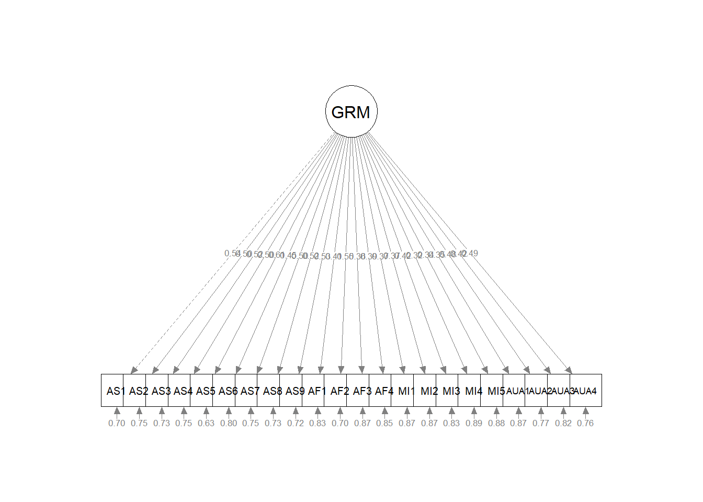
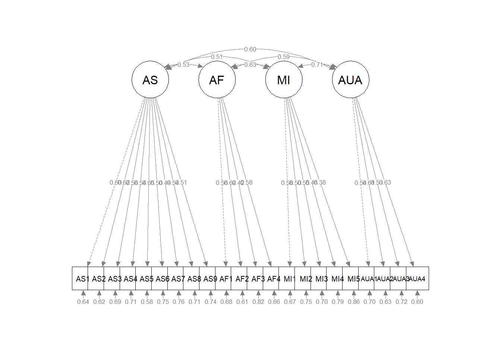
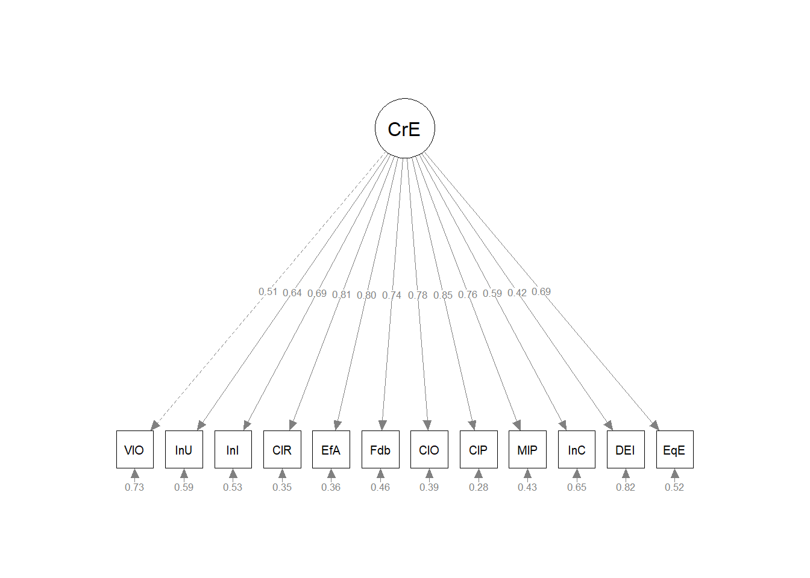

Chapter 10 CFA: First Order Models
This is the first in our series on confirmatory factor analysis (CFA).In this lesson we will compare CFA to principal axis factoring (PAF) and principal components analysis (PCA). We will specify, run, and interpret first order models that are unidimensional and multidimensional. We will compare models to each other and identify key issues in model specification.
10.2 Two Broad Categories of Factor Analysis: Exploratory and Confirmatory
Kline (2016) described confirmatory factor analysis as “exactly half that of SEM – the other half comes from regression analysis” (p. 189).
10.2.1 Common to Both Exploratory and Confirmatory Approaches
In both exploratory and confirmatory approaches, the variance of each indicator/item is divided into common and unique variance. When we assume that variance is 1.0, the common variance becomes the communality. If we have 8 items, we will have 8 communalities and this represents the common variance explained by the factors or components.
- Common variance is shared among the indicators and serves as a basis for observed covariances among them that depart, meaningfully, from zero. We generally assume that:
- Common variance is due to the factors.
- There will be fewer factors than the number of indicators/items. After all, there is no point in retaining as many factors [explanatory entities] as there are entities to be explained [indicators/items].
- The proportion of total variance that is shared is the communality (estimated by \(h^2\)); if \(h^2\) =.70, then 70% of the total indicator variance is common and potentially explained by the factors.
- Unique variance consists of
- specific variance
- systematic variance that is not explained by any factor in the model,
- random measurement error,
- method variance which is not represented in the figure, but could be another source of unique variance.
- specific variance
- In factor analysis, summing the communalities represents the total common variance (a portion of the total variance), but not the total variance.
Factor analysis, then, aligns well with classic test theory and classic approaches to understanding reliability (observed score = true score + error). The inclusion of error is illustrated well in the classic illustrations of CFA and SEM where each item/indicator includes common variance (from the factor) and error variance.
Recall that in principal components analysis (PCA is not factor analysis) one of the key distinctions is that all variance is common variance (there is no unique variance). Total common variance is equal to the total variance explained, which in turn is equal to the total variance.

10.2.2 Differences between EFA and CFA
Below are contrasts between exploratory and confirmatory factor analysis.
- A priori specification of the number of factors
- EFA requires no a priori specification; prior to extraction an EFA program will extract as many factors as indicators. Typically, in subsequent analyses, the researchers specifies how many factors to extract.
- CFA requires researchers to specify the exact number of factors.
- The degree of “exact correspondence” between indicators/items and factors/scales
- EFA is an unrestricted measurement model That is, indicators/items depend on (theoretically, measure) all factors. The direct effects from factors to indicators are pattern coefficients. Kline (2016) says that most refer to these as factor loadings or just loadings but because he believes these terms are ambiguous, he refers to the direct effects as pattern coefficients. We assign them to factors based on their highest loadings (and hopefully no cross-loadings). Depending on whether we select an orthogonal or oblique relationship, correlations between factors will be permitted or suppressed.
- CFA is a restricted measurement model. The researcher specifies the factor(s) on which each indicator/item(s) depends (recall, the causal direction in CFA is from factor to indicators/items.)
- Identification status: The identification of a model has to do with whether it is theoretically possible for a statistics package to derive a unique set of model parameter estimates. Identification is related to model degrees of freedom; we will later explore under-, just-, and over-identified models. For now:
- EFA models with multiple factors are unidentified because they will have more free parameters than observations. Thus, there is no unique set of statistical estimates for the multifactor EFA model, consequently this requires the rotation phase in EFA.
- CFA models must be identified before they can be analyzed so there is only one unique set of parameter estimates. Correspondingly, there is no rotation phase in CFA.
- Sharing variances
- In EFA the specific variance of each indicator is not shared with that of any other indicator.
- In CFA, the researchers can specify if variance is shared between certain pairs of indicators (i.e., error covariances).
10.2.3 On the relationship between EFA and CFA
Kline (2016) admonishes us to not overinterpret the labels “exploratory” and “confirmatory”. Why?
- EFA requires no a priori hypotheses about the relationship between indicators/items and factors, but researchers often expect to specify a predetermined number of factors.
- CFA is not strictly confirmatory. After initial runs, many researchers modify models and hypotheses.
CFA is not a verification or confirmation of EFA results for the same data and number of factors. Kline (2016) does not recommend that researchers follow a model retained from EFA. Why?
- It is possible that the CFA model will be rejected. Oftentimes this is because the secondary coefficients (i.e., non-primary pattern coefficients) accounted for a signifciant proportion of variance in the model. When they are constrained to 0.0 in the CFA model, the model fit will suffer.
- If the CFA model is retained, then it is possible that both EFA and CFA capitalized on chance variation. Thus, if verification via CFA is desired, it should be evaluated through a replication sample.
10.3 Exploring a Standard CFA Model
The research vignette for today is a fairly standard CFA model.
The image represents represents the hypothesis that \(AS_1 - AS_9\), \(AF_1 - AF_4\), \(MI_1 - MI_5\), and \(AUA_1 - AUA_4\) measure, respectively, the AS, AF, MI, and AUA factors, which are assumed to covary. Specifically,in this model:
- Each indicator is continuous with two causes: \(AS\) –> \(AS_1\) <– \(E_1\)
- a single factor that the indicator is supposed to measure, and
- all unique sources of influence represented by the error term
- The error terms are independent of each other and of the factors
- All associations are linear and the factors covary.
- Hence, the symbol for an unanalyzed association is a solid line.
- Each item has a single pattern coefficient (i.e., often more casually termed as a “factor loading”)
- All other potential pattern coefficients are set to “0.00.” These are hard hypotheses and are specified by their absence (i.e., not specified in the code or in the diagram).
- Structure coefficients are the Pearson correlations between factors and continuous indicators. They reflect any source of association, causal or non causal. Sometimes the association is an undirected, back-door path. There is no pattern coefficient for \(AS_2\) <-> \(AF\). BUT, there is a connection from \(AS_2\) to \(AF\) via the \(AS\) <–> \(AF\) covariance.
- Scaling constants (aka unit loading identification [ULI] constraints) are necessary to scale the factors in a metric related to that of the explained (common) variance of the corresponding indicator, or reference (marker) variable. In the figure these are the dashed-line paths from \(AS\) –> \(AS_1\), \(AF\) –> \(AF1\), \(MI\) –> \(MI1\) and \(AUA\) –> \(AUA1\).
- Selecting the reference marker variable is usually arbitrary and selected by the computer program as the first (or last) variable in the code/path. So long as all the indicator variables of the same factor have equally reliable scores, this works satisfactorily.
- Additional scaling constants are found for each of the errors and indicators.
10.3.1 Model Identification for CFA
SEM, in general, requires that all models be identified. Measurement models analyzed in CFA share this requirement, but identification is more straightforward than in other models.
Standard CFA models are sufficiently identified when:
- A single factor model has at least three indicators.
- In a model with two or more factors, each factor has two or more indicators.There are some caveats and arguments:
- Some recommend at least three to five indicators per factor to prevent technical problems with statistical identification.
- In a recent SEM workshop, Todd Little indicated that optimal fit will occur when factors are just-identified with three items per factor.
- Of course, three factors may be insufficient to represent the construct definition.
Identification becomes much more complicated than this, but for today’s models this instruction is sufficent.
10.3.2 Selecting Indicators/Items for a Reflective Measurement
Reflective measurement is another term to describe the circumstance where latent variables are assumed to cause observed variables. Observed variables in reflective measurement are called effect (reflective) indicators.
- At least three for a unidimensional model; at least two per factor for a multidimensional model (but more is safer).
- The items/indicators should have reasonable internal consistency and correlate with each other.
- If the scale is multidimensional (i.e., with subscales) items should correlate more highly with other items in their factors than with items on other factors.
- Negative correlations reduce the reliability of factor measurement, so they should be reverse coded pior to analysis.
- Do not be tempted to specify a factor with indicators that do not measure something. A common mistake is to create a “background” factor and include indicators such as gender, ethnicity, and level of education. Just what is the predicted relationship between gender and ethnicity?
10.4 CFA Workflow
Below is a screenshot of a CFA workflow. The original document is located in the Github site that hosts the ReCentering Psych Stats: Psychometrics OER.
Because the intended audience for the ReCentering Psych Stats OER is the scientist-practitioner-advocate, this lesson focuses on the workflow and decisions in straightforward CFA models. As you might guess, the details of CFA can be quite complex and require more investigation and decision-making in models that pose more complexity or empirical challenges. The following are the general steps in a CFA.
- Creating an items-only dataframe where any items are scaled in the same direction (e.g., negatively worded items are reverse-scored).
- Determining a factor structure that is identified.
- A single factor (unidimensional) model has at least three items/indicators.
- Multidimensional models have at least two items per factor.
- Specify a series of models, these typicallyinclude:
- a unidimensional model (all items on a single factor),
- a single order structure with correlated factors,
- a second orer structure,
- a bifactor structure.
- Evaluate model fit with a variety of indicators, including:
- factor loadings,
- fit indices.
- Compare models.
- In the event of poor model fit, investigate modification indices and consider respecification by:
- eliminating items,
- changing factor membership,
- allowing errors to covary.
10.4.1 CFA in lavaan Requires Fluency with the Syntax
It’s really just regression
- tilda (~, is regressed on) is regression operator
- place DV (y) on left of operator
- place IVs, separate by + on the right
f is a latent variable (LV)
Example: y ~ f1 + f2 + x1 + x2
LVs must be defined by their manifest or latent indicators.
- the special operator (=~, is measured/defined by) is used for this
- Example: f1 =~ y1 + y2 + y3
Variances and covariances are specified with a double tilde operator (~~, is correlated with)
- Example of variance: y1 ~~ y1 (the relationship with itself)
- Example of covariance: y1 ~~ y2 (relationship with another variable)
- Example of covariance of a factor: f1 ~~ f2
*Intercepts (~ 1) for observed and LVs are simple, intercept-only regression formulas + Example of variable intercept: y1 ~ 1 + Example of factor intercept: f1 ~ 1
A complete lavaan model is a combination of these formula types, enclosed between single quotation models. Readibility of model syntax is improved by:
- splitting formulas over multiple lines
- using blank lines within single quote
- labeling with the hashtag
myModel <- ’# regressions y1 + y2 ~ f1 + f2 + x1 + x2 f1 ~ f2 + f3 f2 ~ f3 + x1 + x2
# latent variable definitions
f1 =~ y1 + y2 + y3
f2 =~ y4 + y5 + y6
f3 =~ y7 + y8 + y9 + y10
# variances and covariances
y1 ~~ y1
y2 ~~ y2
f1 ~~ f2
# intercepts
y1 ~ 1
fa ~ 110.4.2 Differing Factor Structures
All models worked in this lesson are first-order (or single-order) models; in the next lesson we extend to hierarchical and bifactor models. To provide an advanced cognitive organizer, let’s take a look across the models.
Models A and B are first-order models. Note that all factors are on a single plane.
- Model A is undimensional, each item is influenced by a single common factor and a term that includes systematic and random error. Note that there is only one systematic source of variance for each item and it is from a single source.
- Model B is often referred to as a “correlated traits” model. Here, the larger construct is separated into distinct-yet-correlated elements. The variance of each item is assumed to be a weighted linear function of two or more common factors.
- Models C is a second-order factor structure. Rather than merely being correlated, factors are related because they share a common cause. In this model, the second order factor explains why three or more traits are correlated. Note that here is no direct relationship between the item and the target construct. Rather, the relationship between the second-order factor and each item is mediated through the primary factor (yes, an indirect effect!).
- Model D is a bifactor structure. Here each item loads on a general factor. This general factor (bottom row) reflects what is common among the items and represents the individual differences on the target dimension that a researcher is most interested in. Group factors (top row) are now specified as orthogonal. The group factors represent common factors measured by the items that explain item response variation not accounted for by the general factor. In some research scenarios, the group factors are termed “nuisance” dimensions. That is, that which they have in common interferes with measuring the primary target of interest.
10.5 Research Vignette
This lesson’s research vignette emerges from Keum et al’s Gendered Racial Microaggressions Scale for Asian American Women (GRMSAAW; (Keum et al., 2018)). The article reports on two separate studies that comprised the development, refinement, and psychometric evaluation of two, parallel, versions (stress appraisal, frequency) of scale. I simulated data from the final construction of the frequency version as the basis of the lecture. If the scale looks somewhat familiar it is because the authors used the Gendered Racial Microaggressions Scale for Black Women (J. A. Lewis & Neville, 2015) as a model.
Keum et al. (2018) reported support for a total scale score (22 items) and four subscales. Below, I list the four subscales, their number of items, and a single example item. At the outset, let me provide a content advisory For those who hold this particular identity (or related identities) the content in the items may be upsetting. In other lessons, I often provide a variable name that gives an indication of the primary content of the item. In the case of the GRMSAAW, I will simply provide an abbreviation of the subscale name and its respective item number. This will allow us to easily inspect the alignment of the item with its intended factor, and hopefully minimize discomfort. If you are not a member of this particular identity, I encourage you to learn about these microaggressions by reading the article in its entirety. Please do not ask members of this group to explain why these microaggressions are harmful or ask if they have encountered them.
There are 22 items on the GRMSAAW scale. Using the same item stems, the authors created two scales. One assesses frequency of the event, the second assesses the degree of stressfulness. I simulated data from the stessfulness scale. Its Likert style scaling included: 0 (not at all stressful), 1(slightly stressful), 2(somewhat stressful), 3(moderately stressful), 4(very stressful), and 5(extremely stressful).
The four factors, number of items, and sample item are as follows:
- Ascribed Submissiveness (9 items)
- Others expect me to be submissive. (AS1)
- Others have been surprised when I disagree with them. (AS2)
- Others take my silence as a sign of compliance. (AS3)
- Others have been surprised when I do things independent of my family. (AS4)
- Others have implied that AAW seem content for being a subordinate. (AS5)
- Others treat me as if I will always comply with their requests. (AS6)
- Others expect me to sacrifice my own needs to take care of others (e.g., family, partner) because I am an AAW. (AS7)
- Others have hinted that AAW are not assertive enough to be leaders. (AS8)
- Others have hinted that AAW seem to have no desire for leadership. (AS9)
- Asian Fetishism (4 items)
- Others express sexual interest in me because of my Asian appearance. (AF1)
- Others take sexual interest in AAW to fulfill their fantasy. (AF2)
- Others take romantic interest in AAW just because they never had sex with an AAW before. (AF3)
- Others have treated me as if I am always open to sexual advances. (AF4)
- Media Invalidation (5 items)
- I see non-Asian women being casted to play female Asian characters.(MI1)
- I rarely see AAW playing the lead role in the media. (MI2)
- I rarely see AAW in the media. (MI3)
- I see AAW playing the same type of characters (e.g., Kung Fu woman, sidekick, mistress, tiger mom) in the media. (MI4)
- I see AAW characters being portrayed as emotionally distant (e.g., cold-hearted, lack of empathy) in the media. (MI5)
- Assumptions of Universal Appearance (4 items)
- Others have talked about AAW as if they all have the same facial features (e.g., eye shape, skin tone). (AUA1)
- Others have suggested that all AAW look alike.(AUA2)
- Others have talked about AAW as if they all have the same body type (e.g., petite, tiny, small-chested). (AUA3)
- Others have pointed out physical traits in AAW that do not look ‘Asian’.
Four additional scales were reported in the Keum et al. article (Keum et al., 2018). Fortunately, I was able to find factor loadings from the original psychometric article or subsequent publications. For multidimensional scales, I assign assign variable names according to the scale to which the item belongs (e.g., Env42). In contrast, when subscales or short unidimensional scales were used, I assigned variable names based on item content (e.g., “blue”). In my own work, I prefer item-level names so that I can quickly see (without having to look up the item names) how the items are behaving. The scales, their original citation, and information about how I simulated data for each are listed below.
- Racial Microaggressions Scale (RMAS; (Torres-Harding et al., 2012)) is a 32-item scale with Likert scaling ranging from 0 (never) to 3 (often/frequent). Higher scores represent greater frequency of perceived microaggressions. I simulated data at the subscale level. The RMAS has six subscales, but only four (Invisibility, Low-Achieving/Undesirable Culture, Foreigner/Not Belonging,and Environmental Invalidation) were used in the study. Data were simulated using factor loadings (from the four factors) in the source article.
- Schedule of Sexist Events (SSE; (Klonoff & Landrine, 1995)) is a 20-item scale that with Likert scaling ranging from 1 (the event has never happened to me) to 6 (the event happened almost all [i.e., more than 70%] of the time). Higher scores represent greater frequency of everyday sexist events. I simulated data the subscale level. Within two larger scales (recent events, lifetime events), there are three subscales: Sexist Degradation and Its Consequences, Unfair/Sexist Events at Work/School, and Unfair Treatment in Distant and Close Relationships. Data were simulated using factor loadings fromthe source article.
- PHQ-9 (Kroenke et al., 2001) is a 9-item scale with Likert scaling ranging from 0 (not at all) to 3 (nearly every day). Higher scores indicate higher levels of depression. I simulated data by estimating factor loadings from Brattmyr et al. (2022).
- Internalized Racism in Asian American Scale (IRAAS (Choi et al., 2017)) is a 14-item scale with Likert scaling ranging from 1 (strongly disagree) to 6 (strongly agree). Higher scores indicate greater internalized racism. Data were simulated using the factor loadings from the bifactor model in the source article.
As you consider homework options, there is sufficient simulated data to use the RMAS, SSE, or IRAAS.
Below, I walk through the data simulation. This is not an essential portion of the lesson, but I will lecture it in case you are interested. None of the items are negatively worded (relative to the other items), so there is no need to reverse-score any items.
Simulating the data involved using factor loadings, means, standard deviations, and correlations between the scales. Because the simulation will produce “out-of-bounds” values, the code below rescales the scores into the range of the Likert-type scaling and rounds them to whole values.
#Entering the intercorrelations, means, and standard deviations from the journal article
Keum_GRMS_generating_model <- '
#measurement model
General =~ .50*AS1 + .44*AS2 + .50*AS3 + .33*AS4 + .58*AS5 + .49*AS6 + .51*AS7 + .53*AS8 + .50*AS9 + .53*AF1 + .74*AF2 + .54*AF3 + .52*AF4 + .64*AUA1 + .59*AUA2 + .67*AUA3 + .64*AUA4 + .59*MI1 + .50*MI2 + .52*MI3 + .40*MI4 + .55*MI5
AS =~ .68*AS1 + .65*AS2 + .53*AS3 + .55*AS4 + .54*AS5 + .55*AS6 + .42*AS7 + .47*AS8 + .50*AS9
AF =~ .63*AF1 + .45*AF2 + .56*AF3 + .54*AF4
AUA =~ .55*AUA1 + .55*AUA2 + .31*AUA3 + .31*AUA4
MI =~ .27*MI1 + .53*MI2 + .57*MI3 + .29*MI4 + .09*MI5
RMAS_FOR =~ .66*FOR1 + .90*FOR2 + .63*FOR4
RMAS_LOW =~ .64*LOW22 + .54*LOW23 + .49*LOW28 + .63*LOW29 + .58*LOW30 + .67*LOW32 + .67*LOW35 + .76*LOW36 + .72*LOW37
RMAS_INV =~ .66*INV33 + .70*INV39 + .79*INV40 + .71*INV41 + .71*INV47 + .61*INV49 + .65*INV51 + .70*INV52
RMAS_ENV =~ .71*ENV42 + .70*ENV43 + .74*ENV44 + .57*ENV45 + .54*ENV46
SSEL_Deg =~ .77*LDeg18 + .73*LDeg19 + .71*LDeg21 + .71*LDeg15 + .67*LDeg16 + .67*LDeg13 + .62*LDeg14 + .58*LDeg20
SSEL_dRel =~ .69*LdRel4 + .68*LdRel6 + .64*LdRel7 + .64*LdRel5 + .63*LdRel1 + .49*LdRel3
SSEL_cRel =~ .73*LcRel11 + .68*LcRel9 + .66*LcRel23
SSEL_Work =~ .73*LWork17 + .10*LWork10 + .64*LWork2
SSER_Deg =~ .72*RDeg15 + .71*RDeg21 + .69*RDeg18 + .68*RDeg16 + .68*RDeg13 + .65*RDeg19 + .58*RDeg14 + .47*RDeg20
SSER_dRel =~ .74*RDeg4 + .67*RDeg6 + .64*RDeg5 + .54*RDeg7 + .51*RDeg1
SSER_cRel =~ .69*RcRel9 + .59*RcRel11 + .53*RcRel23
SSER_Work =~ .72*RWork10 + .67*RWork2 + .62*RWork17 + .51*RWork3
SSE_Lifetime =~ SSEL_Deg + SSEL_dRel + SSEL_cRel + SSEL_Work
SSE_Recent =~ SSER_Deg + SSER_dRel + SSEL_cRel + SSER_Work
PHQ9 =~ .798*anhedonia + .425*down + .591*sleep + .913*lo_energy + .441*appetite + .519*selfworth + .755*concentration + .454*too_slowfast + .695*s_ideation
gIRAAS =~ .51*SN1 + .69*SN2 + .63*SN3 + .65*SN4 + .67*WS5 + .60*WS6 + .74*WS7 + .44*WS8 + .51*WS9 + .79*WS10 + .65*AB11 + .63*AB12 + .68*AB13 + .46*AB14
SelfNegativity =~ .60*SN1 + .50*SN2 + .63*SN3 + .43*SN4
WeakStereotypes =~ .38*WS5 + .22*WS6 + .10*WS7 + .77*WS8 + .34*WS9 + .14*WS10
AppearanceBias =~ .38*AB11 + .28*AB12 + .50*AB13 + .18*AB14
#Means
#Keum et al reported total scale scores, I divided those totals by the number of items per scale for mean scores
AS ~ 3.25*1
AF ~ 3.34*1
AUA ~ 4.52
MI ~ 5.77*1
General ~ 3.81*1
RMAS_FOR ~ 3.05*1
RMAS_LOW ~ 2.6*1
RMAS_INV ~ 2.105*1
RMAS_ENV ~ 3.126*1
SSEL_Deg ~ 2.55*1
SSEL_dRel ~ 1.96*1
SSEL_cRel ~ 3.10*1
SSEL_Work ~ 1.66*1
SSER_Deg ~ 2.02*1
SSER_dRel ~ 1.592*1
SSER_cRel ~ 1.777*1
SSER_Work ~ 1.3925*1
SSER_Lifetime ~ 2.8245*1
SSER_Recent ~ 2.4875*1
PHQ9 ~ 1.836*1
gIRAAS ~ 2.246*1
#Correlations
AS ~~ .00*AF
AS ~~ .00*AUA
AS ~~ .00*MI
AS ~~ .00*General
AS ~~ .28*RMAS_FOR
AS ~~ .24*RMAS_LOW
AS ~~ .46*RMAS_INV
AS ~~ .16*RMAS_ENV
AS ~~ .40*SSE_Lifetime
AS ~~ .28*SSE_Recent
AS ~~ .15*PHQ9
AS ~~ .13*gIRAAS
AF ~~ .00*AUA
AF ~~ .00*MI
AF ~~ .00*General
AF ~~ .02*RMAS_FOR
AF ~~ .05*RMAS_LOW
AF ~~ .11*RMAS_INV
AF ~~ .07*RMAS_ENV
AF ~~ .34*SSE_Lifetime
AF ~~ .27*SSE_Recent
AF ~~ -.04*PHQ9
AF ~~ .21*gIRAAS
AUA ~~ .00*MI
AUA ~~ .00*General
AUA ~~ .18*RMAS_FOR
AUA ~~ .20*RMAS_LOW
AUA ~~ .01*RMAS_INV
AUA ~~ -.04*RMAS_ENV
AUA ~~ .02*SSE_Lifetime
AUA ~~ .92*SSE_Recent
AUA ~~ .02*PHQ9
AUA ~~ .17*gIRAAS
MI ~~ .00*General
MI ~~ -.02*RMAS_FOR
MI ~~ .08*RMAS_LOW
MI ~~ .31*RMAS_INV
MI ~~ .36*RMAS_ENV
MI ~~ .15*SSE_Lifetime
MI ~~ .08*SSE_Recent
MI ~~ -.05*PHQ9
MI ~~ -.03*gIRAAS
General ~~ .34*RMAS_FOR
General ~~ .63*RMAS_LOW
General ~~ .44*RMAS_INV
General ~~ .45*RMAS_ENV
General ~~ .54*SSE_Lifetime
General ~~ .46*SSE_Recent
General ~~ .31*PHQ9
General ~~ -.06*gIRAAS
RMAS_FOR ~~ .57*RMAS_LOW
RMAS_FOR ~~ .56*RMAS_INV
RMAS_FOR ~~ .37*RMAS_ENV
RMAS_FOR ~~ .33*SSE_Lifetime
RMAS_FOR ~~ .25*SSE_Recent
RMAS_FOR ~~ .10*PHQ9
RMAS_FOR ~~ .02*gIRAAS
RMAS_LOW ~~ .69*RMAS_INV
RMAS_LOW ~~ .48*RMAS_ENV
RMAS_LOW ~~ .67*SSE_Lifetime
RMAS_LOW ~~ .57*SSE_Recent
RMAS_LOW ~~ .30*PHQ9
RMAS_LOW ~~ .16*gIRAAS
RMAS_INV ~~ .59*RMAS_ENV
RMAS_INV ~~ .63*SSE_Lifetime
RMAS_INV ~~ .52*SSE_Recent
RMAS_INV ~~ .32*PHQ9
RMAS_INV ~~ .23*gIRAAS
RMAS_ENV ~~ .46*SSE_Lifetime
RMAS_ENV ~~ .31*SSE_Recent
RMAS_ENV ~~ .11*PHQ9
RMAS_ENV ~~ .07*gIRAAS
SSE_Lifetime ~~ .83*SSE_Recent
SSE_Lifetime ~~ .30*PHQ9
SSE_Lifetime ~~ .14*gIRAAS
SSE_Recent ~~ .30*PHQ9
SSE_Recent ~~ .20*gIRAAS
PHQ9 ~~ .18*gIRAAS
#Correlations between SES scales from the Klonoff and Landrine article
#Note that in the article the factor orders were reversed
SSEL_Deg ~~ .64*SSEL_dRel
SSEL_Deg ~~ .61*SSEL_cRel
SSEL_Deg ~~ .50*SSEL_Work
SSEL_dRel ~~ .57*SSEL_cRel
SSEL_dRel ~~ .57*SSEL_Work
SSEL_cRel ~~ .47*SSEL_Work
SSER_Deg ~ .54*SSER_dRel
SSER_Deg ~ .54*SSER_Work
SSER_Deg ~ .59*SSER_cRel
SSER_dRel ~ .56*SSER_Work
SSER_dRel ~ .46*SSER_cRel
SSER_Work ~ .43*SSER_cRel
SSE_Lifetime ~ .75*SSE_Recent
'
set.seed(240311)
dfGRMSAAW <- lavaan::simulateData(model = Keum_GRMS_generating_model,
model.type = "sem",
meanstructure = T,
sample.nobs=304,
standardized=FALSE)
#used to retrieve column indices used in the rescaling script below
col_index <- as.data.frame(colnames(dfGRMSAAW))
#The code below loops through each column of the dataframe and assigns the scaling accordingly
#Rows 1 thru 22 are the GRMS items
#Rows 23 thru 47 are the RMAS
#Rows 48 thru 87 are the SSE
#Rows 88 thru 96 are the PHQ9
#Rows 97 thru 110 are the IRAAS
#Rows 111 thru 112 are scale scores for SSE
for(i in 1:ncol(dfGRMSAAW)){
if(i >= 1 & i <= 22){
dfGRMSAAW[,i] <- scales::rescale(dfGRMSAAW[,i], c(0, 5))
}
if(i >= 23 & i <= 47){
dfGRMSAAW[,i] <- scales::rescale(dfGRMSAAW[,i], c(0, 3))
}
if(i >= 48 & i <= 87){
dfGRMSAAW[,i] <- scales::rescale(dfGRMSAAW[,i], c(1, 6))
}
if(i >= 88 & i <= 96){
dfGRMSAAW[,i] <- scales::rescale(dfGRMSAAW[,i], c(0, 3))
}
if(i >= 97 & i <= 110){
dfGRMSAAW[,i] <- scales::rescale(dfGRMSAAW[,i], c(1, 6))
}
}
#rounding to integers so that the data resembles that which was collected
library(tidyverse)
dfGRMSAAW <- dfGRMSAAW %>% round(0)
#quick check of my work
#psych::describe(dfGRMSAAW) The optional script below will let you save the simulated data to your computing environment as either an .rds object or a .csv file.
An .rds file preserves all formatting to variables prior to the export and re-import. For the purpose of this chapter, you don’t need to do either. That is, you can re-simulate the data each time you work the problem.
# to save the df as an .rds (think 'R object') file on your computer;
# it should save in the same file as the .rmd file you are working
# with saveRDS(dfGRMSAAW, 'dfGRMSAAW.rds') bring back the simulated
# dat from an .rds file dfGRMSAAW <- readRDS('dfGRMSAAW.rds')If you save the .csv file (think “Excel lite”) and bring it back in, you will lose any formatting (e.g., ordered factors will be interpreted as character variables).
# write the simulated data as a .csv write.table(dfGRMSAAW,
# file='dfGRMSAAW.csv', sep=',', col.names=TRUE, row.names=FALSE)
# bring back the simulated dat from a .csv file dfGRMSAAW <- read.csv
# ('dfGRMSAAW.csv', header = TRUE)10.5.1 Modeling the GRMSAAW as Unidimensional
Let’s start simply, taking the GRMSAAW data and seeing about its fit as a unidimensional instrument. In fact, even when measures are presumed to be multi-dimensional, it is common to begin with a unidimensional assessment. Here’s why:
- Operationally, it’s a check to see that data, script, and so forth. are all working.
- If you can’t reject a single-factor model (e.g., if there is a strong support for such), then it makes little sense to evaluate models with more factors (Kline, 2016).
Considerations for the lavaan code include:
- GRMSAAW is a latent variable and can be named anything. We know this because it is followed by: =~
- All the items follow and are “added” with the plus sign
- Don’t let this fool you…the assumption behind SEM/CFA is that the LV causes the score on the item/indicator. Recall, item/indicator scores are influenced by the LV and error.
- The entire model is enclosed in tic marks (’ and ’)
grmsAAWmod1 <- "GRMSAAW =~ AS1 + AS2 + AS3 + AS4 + AS5 + AS6 + AS7 + AS8 + AS9 + AF1 + AF2 + AF3 + AF4 + MI1 + MI2 + MI3 + MI4 + MI5 + AUA1 + AUA2 + AUA3 + AUA4"The object representing the model is then included in the lavaan::cfa() along with the dataset.
We can ask for a summary of the object representing the results.
grmsAAW1fit <- lavaan::cfa(grmsAAWmod1, data = dfGRMSAAW)
lavaan::summary(grmsAAW1fit, fit.measures = TRUE, standardized = TRUE,
rsquare = TRUE)lavaan 0.6.17 ended normally after 29 iterations
Estimator ML
Optimization method NLMINB
Number of model parameters 44
Number of observations 304
Model Test User Model:
Test statistic 444.451
Degrees of freedom 209
P-value (Chi-square) 0.000
Model Test Baseline Model:
Test statistic 1439.317
Degrees of freedom 231
P-value 0.000
User Model versus Baseline Model:
Comparative Fit Index (CFI) 0.805
Tucker-Lewis Index (TLI) 0.785
Loglikelihood and Information Criteria:
Loglikelihood user model (H0) -8387.014
Loglikelihood unrestricted model (H1) -8164.789
Akaike (AIC) 16862.028
Bayesian (BIC) 17025.577
Sample-size adjusted Bayesian (SABIC) 16886.032
Root Mean Square Error of Approximation:
RMSEA 0.061
90 Percent confidence interval - lower 0.053
90 Percent confidence interval - upper 0.069
P-value H_0: RMSEA <= 0.050 0.012
P-value H_0: RMSEA >= 0.080 0.000
Standardized Root Mean Square Residual:
SRMR 0.067
Parameter Estimates:
Standard errors Standard
Information Expected
Information saturated (h1) model Structured
Latent Variables:
Estimate Std.Err z-value P(>|z|) Std.lv Std.all
GRMSAAW =~
AS1 1.000 0.491 0.535
AS2 1.069 0.152 7.012 0.000 0.525 0.520
AS3 1.024 0.143 7.151 0.000 0.503 0.535
AS4 0.909 0.137 6.649 0.000 0.446 0.482
AS5 1.177 0.154 7.634 0.000 0.578 0.590
AS6 0.721 0.108 6.658 0.000 0.354 0.483
AS7 0.914 0.137 6.693 0.000 0.449 0.487
AS8 0.927 0.137 6.765 0.000 0.455 0.494
AS9 0.735 0.117 6.262 0.000 0.361 0.445
AF1 0.675 0.125 5.410 0.000 0.332 0.370
AF2 0.975 0.144 6.755 0.000 0.479 0.493
AF3 0.555 0.120 4.637 0.000 0.272 0.308
AF4 0.851 0.141 6.042 0.000 0.418 0.425
MI1 0.744 0.120 6.182 0.000 0.365 0.438
MI2 0.641 0.122 5.252 0.000 0.315 0.357
MI3 0.860 0.146 5.907 0.000 0.422 0.413
MI4 0.601 0.130 4.614 0.000 0.295 0.307
MI5 0.655 0.122 5.356 0.000 0.322 0.365
AUA1 0.825 0.144 5.740 0.000 0.405 0.398
AUA2 0.878 0.132 6.659 0.000 0.431 0.483
AUA3 0.714 0.118 6.058 0.000 0.350 0.426
AUA4 1.060 0.146 7.262 0.000 0.520 0.547
Variances:
Estimate Std.Err z-value P(>|z|) Std.lv Std.all
.AS1 0.600 0.052 11.500 0.000 0.600 0.713
.AS2 0.744 0.064 11.565 0.000 0.744 0.730
.AS3 0.631 0.055 11.503 0.000 0.631 0.714
.AS4 0.657 0.056 11.704 0.000 0.657 0.767
.AS5 0.624 0.056 11.225 0.000 0.624 0.651
.AS6 0.412 0.035 11.701 0.000 0.412 0.766
.AS7 0.648 0.055 11.689 0.000 0.648 0.763
.AS8 0.641 0.055 11.663 0.000 0.641 0.756
.AS9 0.528 0.045 11.820 0.000 0.528 0.802
.AF1 0.693 0.058 12.002 0.000 0.693 0.863
.AF2 0.714 0.061 11.666 0.000 0.714 0.757
.AF3 0.707 0.058 12.113 0.000 0.707 0.905
.AF4 0.794 0.067 11.875 0.000 0.794 0.820
.MI1 0.564 0.048 11.841 0.000 0.564 0.809
.MI2 0.678 0.056 12.028 0.000 0.678 0.873
.MI3 0.870 0.073 11.906 0.000 0.870 0.830
.MI4 0.839 0.069 12.115 0.000 0.839 0.906
.MI5 0.672 0.056 12.011 0.000 0.672 0.866
.AUA1 0.872 0.073 11.941 0.000 0.872 0.842
.AUA2 0.610 0.052 11.700 0.000 0.610 0.766
.AUA3 0.553 0.047 11.871 0.000 0.553 0.818
.AUA4 0.634 0.055 11.448 0.000 0.634 0.701
GRMSAAW 0.241 0.051 4.694 0.000 1.000 1.000
R-Square:
Estimate
AS1 0.287
AS2 0.270
AS3 0.286
AS4 0.233
AS5 0.349
AS6 0.234
AS7 0.237
AS8 0.244
AS9 0.198
AF1 0.137
AF2 0.243
AF3 0.095
AF4 0.180
MI1 0.191
MI2 0.127
MI3 0.170
MI4 0.094
MI5 0.134
AUA1 0.158
AUA2 0.234
AUA3 0.182
AUA4 0.299I find it helpful to immediately plot what we did. A quick look alerts me to errors.
semPlot::semPaths(grmsAAW1fit, layout = "tree", style = "lisrel", what = "col",
whatLabels = "stand") #### Interpreting the Output
With a quick look at the plot, let’s work through the results. Rosseel’s (2019) lavaan tutorial is a useful resource in walking through the output.
The header is the first few lines of the information. It contains:
- the lavaan version number (0.6-17 that I’m using on 4/12/24),
- maximum likelihood (ML) was used as the estimator,
- confirmation that the specification converged normally after 28 iterations,
- indication that 304 cases were used in this analysis (this would be less if some were skipped because of missing data),
- results including the model user test statistic, df, and corresponding p value: \(\chi ^{2}(209) = 444.451, p < .001\).
Model Test User Model:
Fit statistics are included in the second section. They are only shown when the argument “fit.measures = TRUE” is in the script. Standardized values are not the default, they require the argument, “standardized = TRUE”. We’ll come back to these shortly…
Parameter estimates is the last section.
For now we are interested in the “Latent Variables” section.
- Estimate contains the estimated or fixed parameter value for each model parameter;
- Std. err is the standard error for each estimated parameter;
- Z-value is the Wald statistic (the parameter divided by its SE)
- P(>|z|) is the p value for testing the null hypothesis that the parameter equals zero in the population
- Std.lv standardizes only the LVs
- Std.all both latent and observed variables are standardized; this is considered the “completely standardized solution”
Note that item AS1 might seem incomplete – there is only a 1.000 and a value for the Std.lv. Recall we used this to scale the single factor by fixing its value to 1.000. Coefficients that are fixed to 1.0 to scale a factor have no standard errors and therefore no significance test.
The SE and associated \(p\) values are associated with the unstandardized estimates. Intuitively, it is easiest for me to understand the relative magnitude of the pattern coefficients by looking at the Std.all column. We can see that the items associated with what we will soon define as the AS factor are all strong and positive. The remaining items have variable loadings with many of the being quite low, non-significant, and even negatively valenced.
Let’s examine to the middle set metrics which assess global fit.
CFA falls into a modeling approach to evaluating results. While it provides some flexibility (we get away from the strict, NHST appproach of \(p\) < .05) there is greater interpretive ambiguity.
Fit statistics tend to be clustered together based on their approach to summarizing the goodness or badness of fit.
10.5.1.1 Model Test User Model:
The chi-square statistic that evaluates the exact-fit hypothesis that there is no difference between the covariances predicted by the model, given the parameter estimates, and the population covariance matrix. Rejecting the hypothesis says that,
- the data contain covariance information that speak against the model, and
- the researcher should explain model-data discrepancies that exceed those expected by sampling error.
Traditional interpretion of the chi-square is an accept-support test where the null hypothesis represents the researchers’ believe that the model is correct. This means that the absence of statistical significance (\(p\) > .05) that supports the model. This is backwards from our usual reject-support test approach.
The \(\chi^2\) is frequently criticized:
- Accept-support test approaches are logically weaker because the failure to disprove an assertation (the exact-fit hypothesis) does not prove that the assertion is true.
- Too small a sample size (low power) makes it more likely that the model will be retained.
- CFA/SEM, requires large samples and so the \(\chi^2\) is frequently statistically significant; this frequently results in rejection of the researchers’ model.
Kline (2016) recommends that we treat the \(\chi^2\) like a smoke alarm – if the alarm sounds, there may or may not be a fire (a serious model-data discrepancy), but we should treat the alarm seriously and further inspect issues of fit.
For our unidimensional GRMSAAW CFA \(\chi ^{2}(209) = 444.451, p < .001\), the significant p value is not what we want because it says that our specified model is different than the covariances in the model.
10.5.1.2 Model Test Baseline Model
This model is the independence model. That is, there is complete independence of of all variables in the model (i.e., in which all correlations among variables are zero). This is the most restricted model. It is typical for chi-quare values to be quite high (as it is in our example: 1439.317). On its own, this model is not useful to us. It is used, though, in comparisons of incremental fit.
10.5.1.3 Incremental Fit Indices (User versus Baseline Models)
Incremental fit indices ask the question, how much better is the fit of our specified model to the data then the baseline model (where it is assumed no relations between the variables).
The Comparative Fit Index (CFI) and Tucker-Lewis Index (TLI) are goodness of fit statistics, ranging from 0 to 1.0 where 1.0 is best.
CFI: compares the amount of departure from close fit for the researcher’s model against that of the independence/baseline (null) model.
\[CFI = 1-\frac{\hat{\Delta_{M}}}{\hat{\Delta_{B}}}\]
Where there is no departure from close fit, then CFI will equal 1.0. We interpret the value of the CFI as a percent of how much better the researcher’s model is than the baseline model. While 81% sounds like an improvement – Hu and Bentler (1999) stated that “acceptable fit” is achieved when the \(CFI \geq .95\) and \(SRMR \leq .08\); the combination rule. It is important to note that later simulation studies have not supported those thresholds.
TLI: aka the non-normed fit index (NNFI) controls for \(df_M\) from the researcher’s model and \(df_B\) from the baseline model. As such, it imposes a greater relative penalty for model complexity than the CFI. The TLI is a bit unstable in that the values can exceed 1.0.
Because the two measures are so related, only one should be reported (I typically see the CFI).
For our unidimensional GRMSAAW CFA, CFI = .805 and TLI = .785. While these predict around 81% better than the baseline/independence model, it does not come close to the standard of \(\geq .95\).
10.5.1.4 Loglikelihood and Information Criteria
The Aikaike Information Criterion (AIC) and the Bayesian Information Criterion (BIC) utilize an information theory approach to data analysis by combing statistical estimation and model selection into a single framework. The BIC augments the AIC by taking sample size into consideration.
The AIC and BIC are usually used to select among competing nonhierarchical models and are only used in comparison with each other. Thus our current values of 16862.028 (AIC) and 17025.577 (BIC) are meaningless on their own. The model with the smallest values of the predictive fit indices is chosen as the one that is most likely to replicate. It means that this model has relatively better fit and fewer free parameters than competing models.
Later in the lesson we will return to these values to compare a correlated, four-factor solution with this unidimensional model.
10.5.1.5 Root Mean Square Error of Approximation
The RMSEA is an absolute fit index scaled as a badness-of-fit statistic where a value of 0.00 is the best fit. The RMSEA favors models with more degrees of freedom and larger sample sizes. A unique aspect of the RMSEA is its 90% confidence interval.
While there is chatter/controversy about what constitutes an acceptable value, there is general consensus that \(RMSEA \geq .10\) points to serious problems. An \(RMSEA\leq .05\) is desired. In evaluating the RMSEA, we need to monitor the upper bound of the confidence interval to see that it isn’t sneaking into the danger zone.
For our unidimensional GRMSAAW CFA, RMSEA = 0.061, 90% CI(0.053, 0.069). This value is within the range of acceptability.
10.5.1.6 Standardized Root Mean Square Residual
The SRMR is an absolute fit index that is a badness-of-fit statistic (i.e., perfect model fit is when the value = 0.00 and increasingly higher values indicate the “badness”).
The SRMR is a standardized version of the root mean square residual (RMR), which is a measure of the mean absolute covariance residual. Standardizing the value facilitates interpretation.
Poor fit is indicated when \(SRMR \geq .10\).
Recall, Hu and Bentler’s combination rule (which is somewhat contested) suggested that the SRMR be interpreted along with the CFI such that: \(CFI \geqslant .95\) and \(SRMR \leq .05\).
For our unidimensional GRMSAAW CFA, SRMR = 0.067.
Inspecting the residuals (we look for relatively large values) may help understand the source of poor fit, so let’s do that.
$cov
AS1 AS2 AS3 AS4 AS5 AS6 AS7 AS8 AS9 AF1 AF2 AF3
AS1 0.841
AS2 0.258 1.020
AS3 0.247 0.264 0.883
AS4 0.219 0.234 0.224 0.856
AS5 0.284 0.303 0.290 0.258 0.958
AS6 0.174 0.186 0.178 0.158 0.205 0.537
AS7 0.220 0.235 0.225 0.200 0.259 0.159 0.849
AS8 0.223 0.239 0.229 0.203 0.263 0.161 0.204 0.849
AS9 0.177 0.189 0.181 0.161 0.209 0.128 0.162 0.164 0.658
AF1 0.163 0.174 0.167 0.148 0.192 0.117 0.149 0.151 0.120 0.803
AF2 0.235 0.251 0.241 0.214 0.277 0.170 0.215 0.218 0.173 0.159 0.943
AF3 0.134 0.143 0.137 0.122 0.157 0.096 0.122 0.124 0.098 0.090 0.130 0.781
AF4 0.205 0.219 0.210 0.187 0.242 0.148 0.188 0.190 0.151 0.139 0.200 0.114
MI1 0.179 0.192 0.184 0.163 0.211 0.129 0.164 0.166 0.132 0.121 0.175 0.100
MI2 0.154 0.165 0.158 0.140 0.182 0.111 0.141 0.143 0.114 0.104 0.151 0.086
MI3 0.207 0.222 0.212 0.189 0.244 0.150 0.190 0.192 0.152 0.140 0.202 0.115
MI4 0.145 0.155 0.148 0.132 0.170 0.104 0.132 0.134 0.106 0.098 0.141 0.080
MI5 0.158 0.169 0.162 0.144 0.186 0.114 0.144 0.146 0.116 0.107 0.154 0.088
AUA1 0.199 0.213 0.204 0.181 0.234 0.143 0.182 0.184 0.146 0.134 0.194 0.110
AUA2 0.212 0.226 0.217 0.192 0.249 0.153 0.193 0.196 0.156 0.143 0.207 0.118
AUA3 0.172 0.184 0.176 0.156 0.202 0.124 0.157 0.159 0.126 0.116 0.168 0.095
AUA4 0.255 0.273 0.261 0.232 0.301 0.184 0.233 0.237 0.188 0.173 0.249 0.142
AF4 MI1 MI2 MI3 MI4 MI5 AUA1 AUA2 AUA3 AUA4
AS1
AS2
AS3
AS4
AS5
AS6
AS7
AS8
AS9
AF1
AF2
AF3
AF4 0.968
MI1 0.153 0.697
MI2 0.132 0.115 0.777
MI3 0.177 0.154 0.133 1.048
MI4 0.123 0.108 0.093 0.125 0.926
MI5 0.134 0.118 0.101 0.136 0.095 0.775
AUA1 0.169 0.148 0.127 0.171 0.119 0.130 1.036
AUA2 0.180 0.158 0.136 0.182 0.127 0.139 0.175 0.796
AUA3 0.146 0.128 0.110 0.148 0.103 0.113 0.142 0.151 0.676
AUA4 0.217 0.190 0.164 0.220 0.153 0.167 0.211 0.224 0.182 0.904# lavaan::residuals(grmsAAW1fit, type = 'raw')
# lavaan::residuals(grmsAAW1fit, type = 'standardized')
# will hashtag out for knitted file
lavaan::residuals(grmsAAW1fit, type = "cor")$type
[1] "cor.bollen"
$cov
AS1 AS2 AS3 AS4 AS5 AS6 AS7 AS8 AS9 AF1
AS1 0.000
AS2 0.101 0.000
AS3 0.059 0.096 0.000
AS4 0.073 0.122 0.062 0.000
AS5 0.137 0.055 -0.021 0.060 0.000
AS6 0.024 0.096 0.000 -0.043 0.047 0.000
AS7 -0.022 0.042 0.052 0.057 0.027 -0.036 0.000
AS8 0.003 0.091 0.037 0.023 0.086 0.042 0.055 0.000
AS9 0.080 0.109 0.017 0.067 0.072 0.095 0.013 0.064 0.000
AF1 -0.053 -0.088 0.062 -0.007 -0.057 -0.078 -0.070 -0.008 -0.050 0.000
AF2 -0.040 -0.134 -0.057 0.022 -0.053 -0.064 -0.050 0.008 -0.006 0.154
AF3 -0.027 -0.117 0.041 -0.088 -0.042 -0.074 -0.038 -0.018 0.015 0.222
AF4 -0.093 -0.059 -0.006 0.007 -0.016 -0.063 -0.015 -0.066 -0.079 0.203
MI1 -0.092 -0.091 -0.074 -0.069 -0.096 0.015 -0.015 -0.066 -0.100 0.082
MI2 -0.117 -0.001 -0.063 -0.049 -0.035 -0.005 0.040 -0.067 -0.089 -0.084
MI3 -0.080 -0.025 -0.030 -0.065 -0.045 0.013 -0.088 0.034 0.007 -0.007
MI4 -0.103 -0.111 -0.018 -0.153 -0.088 -0.014 0.070 -0.068 -0.026 -0.012
MI5 0.006 -0.046 -0.042 0.021 -0.028 -0.023 0.003 -0.046 -0.097 -0.015
AUA1 -0.075 -0.114 -0.017 -0.129 -0.057 -0.008 -0.016 -0.015 -0.119 -0.118
AUA2 -0.025 -0.059 -0.068 -0.101 -0.031 0.015 -0.040 -0.055 -0.074 -0.005
AUA3 -0.003 -0.028 -0.019 -0.060 -0.075 0.031 -0.049 -0.125 -0.022 -0.007
AUA4 -0.006 -0.078 -0.042 0.000 -0.013 -0.061 0.025 -0.065 -0.073 0.031
AF2 AF3 AF4 MI1 MI2 MI3 MI4 MI5 AUA1 AUA2
AS1
AS2
AS3
AS4
AS5
AS6
AS7
AS8
AS9
AF1
AF2 0.000
AF3 0.056 0.000
AF4 0.138 0.088 0.000
MI1 0.133 0.019 0.064 0.000
MI2 -0.070 -0.006 0.063 0.115 0.000
MI3 0.016 -0.002 -0.002 0.130 0.223 0.000
MI4 0.043 0.017 0.025 0.141 0.111 0.157 0.000
MI5 0.035 0.081 0.012 -0.030 0.041 -0.015 0.119 0.000
AUA1 0.025 0.024 -0.024 0.084 0.113 0.059 0.045 0.022 0.000
AUA2 0.006 -0.006 0.022 0.029 0.055 -0.013 0.003 0.071 0.184 0.000
AUA3 0.029 0.011 -0.064 -0.008 0.030 -0.016 0.078 0.057 0.141 0.115
AUA4 0.005 0.005 0.017 0.072 -0.016 -0.029 0.017 0.002 0.100 0.098
AUA3 AUA4
AS1
AS2
AS3
AS4
AS5
AS6
AS7
AS8
AS9
AF1
AF2
AF3
AF4
MI1
MI2
MI3
MI4
MI5
AUA1
AUA2
AUA3 0.000
AUA4 0.092 0.000 lhs op rhs mi epc sepc.lv sepc.all sepc.nox
46 AS1 ~~ AS2 6.859 0.108 0.108 0.162 0.162
47 AS1 ~~ AS3 2.401 0.059 0.059 0.096 0.096
48 AS1 ~~ AS4 3.353 0.070 0.070 0.112 0.112
49 AS1 ~~ AS5 14.871 0.148 0.148 0.243 0.243
50 AS1 ~~ AS6 0.381 0.019 0.019 0.038 0.038
51 AS1 ~~ AS7 0.306 -0.021 -0.021 -0.034 -0.034
52 AS1 ~~ AS8 0.005 0.003 0.003 0.004 0.004
53 AS1 ~~ AS9 3.823 0.067 0.067 0.119 0.119
54 AS1 ~~ AF1 1.511 -0.048 -0.048 -0.074 -0.074
55 AS1 ~~ AF2 1.035 -0.041 -0.041 -0.062 -0.062
56 AS1 ~~ AF3 0.374 -0.024 -0.024 -0.037 -0.037
57 AS1 ~~ AF4 5.081 -0.094 -0.094 -0.137 -0.137
58 AS1 ~~ MI1 5.049 -0.080 -0.080 -0.137 -0.137
59 AS1 ~~ MI2 7.368 -0.104 -0.104 -0.164 -0.164
60 AS1 ~~ MI3 3.666 -0.084 -0.084 -0.116 -0.116
61 AS1 ~~ MI4 5.429 -0.099 -0.099 -0.140 -0.140
62 AS1 ~~ MI5 0.018 0.005 0.005 0.008 0.008
63 AS1 ~~ AUA1 3.179 -0.078 -0.078 -0.108 -0.108
64 AS1 ~~ AUA2 0.407 -0.024 -0.024 -0.039 -0.039
65 AS1 ~~ AUA3 0.004 -0.002 -0.002 -0.004 -0.004
66 AS1 ~~ AUA4 0.027 -0.006 -0.006 -0.010 -0.010
67 AS2 ~~ AS3 6.186 0.105 0.105 0.154 0.154
68 AS2 ~~ AS4 9.103 0.129 0.129 0.184 0.184
69 AS2 ~~ AS5 2.292 0.065 0.065 0.095 0.095
70 AS2 ~~ AS6 5.695 0.081 0.081 0.146 0.146
71 AS2 ~~ AS7 1.072 0.044 0.044 0.063 0.063
72 AS2 ~~ AS8 5.239 0.097 0.097 0.140 0.140
73 AS2 ~~ AS9 6.981 0.101 0.101 0.160 0.160
74 AS2 ~~ AF1 4.097 -0.088 -0.088 -0.122 -0.122
75 AS2 ~~ AF2 11.242 -0.150 -0.150 -0.205 -0.205
76 AS2 ~~ AF3 6.878 -0.114 -0.114 -0.157 -0.157
77 AS2 ~~ AF4 1.941 -0.065 -0.065 -0.084 -0.084
78 AS2 ~~ MI1 4.814 -0.086 -0.086 -0.133 -0.133
79 AS2 ~~ MI2 0.001 -0.001 -0.001 -0.002 -0.002
80 AS2 ~~ MI3 0.335 -0.028 -0.028 -0.035 -0.035
81 AS2 ~~ MI4 6.183 -0.118 -0.118 -0.149 -0.149
82 AS2 ~~ MI5 1.123 -0.045 -0.045 -0.064 -0.064
83 AS2 ~~ AUA1 7.163 -0.130 -0.130 -0.162 -0.162
84 AS2 ~~ AUA2 2.155 -0.060 -0.060 -0.090 -0.090
85 AS2 ~~ AUA3 0.445 -0.026 -0.026 -0.040 -0.040
86 AS2 ~~ AUA4 4.164 -0.087 -0.087 -0.126 -0.126
87 AS3 ~~ AS4 2.403 0.061 0.061 0.095 0.095
88 AS3 ~~ AS5 0.360 -0.024 -0.024 -0.038 -0.038
89 AS3 ~~ AS6 0.000 0.000 0.000 0.000 0.000
90 AS3 ~~ AS7 1.752 0.052 0.052 0.081 0.081
91 AS3 ~~ AS8 0.886 0.037 0.037 0.058 0.058
92 AS3 ~~ AS9 0.164 0.014 0.014 0.025 0.025
93 AS3 ~~ AF1 2.082 0.058 0.058 0.087 0.087
94 AS3 ~~ AF2 2.114 -0.060 -0.060 -0.089 -0.089
95 AS3 ~~ AF3 0.850 0.037 0.037 0.055 0.055
96 AS3 ~~ AF4 0.024 -0.007 -0.007 -0.009 -0.009
97 AS3 ~~ MI1 3.213 -0.065 -0.065 -0.109 -0.109
98 AS3 ~~ MI2 2.144 -0.058 -0.058 -0.088 -0.088
99 AS3 ~~ MI3 0.511 -0.032 -0.032 -0.043 -0.043
100 AS3 ~~ MI4 0.158 -0.017 -0.017 -0.024 -0.024
101 AS3 ~~ MI5 0.978 -0.039 -0.039 -0.060 -0.060
102 AS3 ~~ AUA1 0.165 -0.018 -0.018 -0.025 -0.025
103 AS3 ~~ AUA2 2.950 -0.065 -0.065 -0.105 -0.105
104 AS3 ~~ AUA3 0.212 -0.017 -0.017 -0.028 -0.028
105 AS3 ~~ AUA4 1.248 -0.044 -0.044 -0.069 -0.069
106 AS4 ~~ AS5 2.576 0.064 0.064 0.100 0.100
107 AS4 ~~ AS6 1.089 -0.033 -0.033 -0.063 -0.063
108 AS4 ~~ AS7 1.916 0.055 0.055 0.084 0.084
109 AS4 ~~ AS8 0.319 0.022 0.022 0.034 0.034
110 AS4 ~~ AS9 2.469 0.056 0.056 0.095 0.095
111 AS4 ~~ AF1 0.024 -0.006 -0.006 -0.009 -0.009
112 AS4 ~~ AF2 0.287 0.022 0.022 0.033 0.033
113 AS4 ~~ AF3 3.687 -0.078 -0.078 -0.114 -0.114
114 AS4 ~~ AF4 0.026 0.007 0.007 0.010 0.010
115 AS4 ~~ MI1 2.555 -0.059 -0.059 -0.096 -0.096
116 AS4 ~~ MI2 1.178 -0.043 -0.043 -0.065 -0.065
117 AS4 ~~ MI3 2.225 -0.068 -0.068 -0.090 -0.090
118 AS4 ~~ MI4 10.991 -0.146 -0.146 -0.197 -0.197
119 AS4 ~~ MI5 0.225 0.019 0.019 0.028 0.028
120 AS4 ~~ AUA1 8.523 -0.133 -0.133 -0.175 -0.175
121 AS4 ~~ AUA2 5.898 -0.093 -0.093 -0.147 -0.147
122 AS4 ~~ AUA3 1.901 -0.050 -0.050 -0.083 -0.083
123 AS4 ~~ AUA4 0.000 0.000 0.000 -0.001 -0.001
124 AS5 ~~ AS6 1.613 0.040 0.040 0.079 0.079
125 AS5 ~~ AS7 0.511 0.028 0.028 0.045 0.045
126 AS5 ~~ AS8 5.348 0.091 0.091 0.144 0.144
127 AS5 ~~ AS9 3.532 0.067 0.067 0.116 0.116
128 AS5 ~~ AF1 2.026 -0.057 -0.057 -0.087 -0.087
129 AS5 ~~ AF2 2.047 -0.060 -0.060 -0.089 -0.089
130 AS5 ~~ AF3 1.001 -0.040 -0.040 -0.061 -0.061
131 AS5 ~~ AF4 0.164 -0.018 -0.018 -0.025 -0.025
132 AS5 ~~ MI1 6.141 -0.091 -0.091 -0.153 -0.153
133 AS5 ~~ MI2 0.728 -0.034 -0.034 -0.052 -0.052
134 AS5 ~~ MI3 1.311 -0.052 -0.052 -0.070 -0.070
135 AS5 ~~ MI4 4.499 -0.093 -0.093 -0.129 -0.129
136 AS5 ~~ MI5 0.496 -0.028 -0.028 -0.043 -0.043
137 AS5 ~~ AUA1 2.084 -0.065 -0.065 -0.089 -0.089
138 AS5 ~~ AUA2 0.674 -0.032 -0.032 -0.051 -0.051
139 AS5 ~~ AUA3 3.657 -0.069 -0.069 -0.118 -0.118
140 AS5 ~~ AUA4 0.130 -0.014 -0.014 -0.023 -0.023
141 AS6 ~~ AS7 0.738 -0.027 -0.027 -0.052 -0.052
142 AS6 ~~ AS8 1.052 0.032 0.032 0.062 0.062
143 AS6 ~~ AS9 4.961 0.063 0.063 0.134 0.134
144 AS6 ~~ AF1 3.044 -0.056 -0.056 -0.104 -0.104
145 AS6 ~~ AF2 2.437 -0.051 -0.051 -0.095 -0.095
146 AS6 ~~ AF3 2.553 -0.051 -0.051 -0.095 -0.095
147 AS6 ~~ AF4 2.090 -0.050 -0.050 -0.087 -0.087
148 AS6 ~~ MI1 0.127 0.010 0.010 0.022 0.022
149 AS6 ~~ MI2 0.011 -0.003 -0.003 -0.006 -0.006
150 AS6 ~~ MI3 0.095 0.011 0.011 0.019 0.019
151 AS6 ~~ MI4 0.092 -0.011 -0.011 -0.018 -0.018
152 AS6 ~~ MI5 0.272 -0.016 -0.016 -0.031 -0.031
153 AS6 ~~ AUA1 0.035 -0.007 -0.007 -0.011 -0.011
154 AS6 ~~ AUA2 0.133 0.011 0.011 0.022 0.022
155 AS6 ~~ AUA3 0.506 0.020 0.020 0.043 0.043
156 AS6 ~~ AUA4 2.410 -0.049 -0.049 -0.095 -0.095
157 AS7 ~~ AS8 1.769 0.052 0.052 0.081 0.081
158 AS7 ~~ AS9 0.095 0.011 0.011 0.019 0.019
159 AS7 ~~ AF1 2.433 -0.063 -0.063 -0.093 -0.093
160 AS7 ~~ AF2 1.471 -0.050 -0.050 -0.074 -0.074
161 AS7 ~~ AF3 0.701 -0.034 -0.034 -0.050 -0.050
162 AS7 ~~ AF4 0.125 -0.015 -0.015 -0.021 -0.021
163 AS7 ~~ MI1 0.126 -0.013 -0.013 -0.021 -0.021
164 AS7 ~~ MI2 0.806 0.036 0.036 0.054 0.054
165 AS7 ~~ MI3 4.071 -0.091 -0.091 -0.121 -0.121
166 AS7 ~~ MI4 2.347 0.067 0.067 0.091 0.091
167 AS7 ~~ MI5 0.003 0.002 0.002 0.003 0.003
168 AS7 ~~ AUA1 0.138 -0.017 -0.017 -0.022 -0.022
169 AS7 ~~ AUA2 0.942 -0.037 -0.037 -0.059 -0.059
170 AS7 ~~ AUA3 1.301 -0.041 -0.041 -0.069 -0.069
171 AS7 ~~ AUA4 0.400 0.025 0.025 0.039 0.039
172 AS8 ~~ AS9 2.294 0.053 0.053 0.092 0.092
173 AS8 ~~ AF1 0.035 -0.007 -0.007 -0.011 -0.011
174 AS8 ~~ AF2 0.039 0.008 0.008 0.012 0.012
175 AS8 ~~ AF3 0.147 -0.015 -0.015 -0.023 -0.023
176 AS8 ~~ AF4 2.355 -0.066 -0.066 -0.093 -0.093
177 AS8 ~~ MI1 2.370 -0.056 -0.056 -0.093 -0.093
178 AS8 ~~ MI2 2.233 -0.059 -0.059 -0.089 -0.089
179 AS8 ~~ MI3 0.615 0.035 0.035 0.047 0.047
180 AS8 ~~ MI4 2.210 -0.065 -0.065 -0.089 -0.089
181 AS8 ~~ MI5 1.053 -0.040 -0.040 -0.061 -0.061
182 AS8 ~~ AUA1 0.115 -0.015 -0.015 -0.020 -0.020
183 AS8 ~~ AUA2 1.772 -0.051 -0.051 -0.081 -0.081
184 AS8 ~~ AUA3 8.486 -0.105 -0.105 -0.176 -0.176
185 AS8 ~~ AUA4 2.816 -0.066 -0.066 -0.103 -0.103
186 AS9 ~~ AF1 1.186 -0.039 -0.039 -0.065 -0.065
187 AS9 ~~ AF2 0.018 -0.005 -0.005 -0.008 -0.008
188 AS9 ~~ AF3 0.106 0.012 0.012 0.019 0.019
189 AS9 ~~ AF4 3.138 -0.069 -0.069 -0.106 -0.106
190 AS9 ~~ MI1 5.119 -0.074 -0.074 -0.136 -0.136
191 AS9 ~~ MI2 3.713 -0.068 -0.068 -0.114 -0.114
192 AS9 ~~ MI3 0.027 0.007 0.007 0.010 0.010
193 AS9 ~~ MI4 0.304 -0.022 -0.022 -0.033 -0.033
194 AS9 ~~ MI5 4.392 -0.074 -0.074 -0.125 -0.125
195 AS9 ~~ AUA1 6.887 -0.106 -0.106 -0.157 -0.157
196 AS9 ~~ AUA2 3.012 -0.059 -0.059 -0.105 -0.105
197 AS9 ~~ AUA3 0.239 -0.016 -0.016 -0.029 -0.029
198 AS9 ~~ AUA4 3.230 -0.063 -0.063 -0.110 -0.110
199 AF1 ~~ AF2 12.031 0.146 0.146 0.208 0.208
200 AF1 ~~ AF3 20.113 0.184 0.184 0.263 0.263
201 AF1 ~~ AF4 18.999 0.192 0.192 0.259 0.259
202 AF1 ~~ MI1 3.127 0.066 0.066 0.105 0.105
203 AF1 ~~ MI2 2.997 -0.070 -0.070 -0.102 -0.102
204 AF1 ~~ MI3 0.024 -0.007 -0.007 -0.009 -0.009
205 AF1 ~~ MI4 0.057 -0.011 -0.011 -0.014 -0.014
206 AF1 ~~ MI5 0.092 -0.012 -0.012 -0.018 -0.018
207 AF1 ~~ AUA1 6.189 -0.114 -0.114 -0.147 -0.147
208 AF1 ~~ AUA2 0.014 -0.005 -0.005 -0.007 -0.007
209 AF1 ~~ AUA3 0.023 -0.006 -0.006 -0.009 -0.009
210 AF1 ~~ AUA4 0.540 0.029 0.029 0.044 0.044
211 AF2 ~~ AF3 1.501 0.052 0.052 0.073 0.073
212 AF2 ~~ AF4 10.383 0.146 0.146 0.194 0.194
213 AF2 ~~ MI1 9.780 0.120 0.120 0.189 0.189
214 AF2 ~~ MI2 2.427 -0.065 -0.065 -0.093 -0.093
215 AF2 ~~ MI3 0.143 0.018 0.018 0.023 0.023
216 AF2 ~~ MI4 0.879 0.043 0.043 0.056 0.056
217 AF2 ~~ MI5 0.604 0.032 0.032 0.047 0.047
218 AF2 ~~ AUA1 0.339 0.028 0.028 0.035 0.035
219 AF2 ~~ AUA2 0.020 0.006 0.006 0.009 0.009
220 AF2 ~~ AUA3 0.453 0.026 0.026 0.041 0.041
221 AF2 ~~ AUA4 0.019 0.006 0.006 0.009 0.009
222 AF3 ~~ AF4 3.396 0.081 0.081 0.109 0.109
223 AF3 ~~ MI1 0.156 0.015 0.015 0.023 0.023
224 AF3 ~~ MI2 0.016 -0.005 -0.005 -0.007 -0.007
225 AF3 ~~ MI3 0.002 -0.002 -0.002 -0.003 -0.003
226 AF3 ~~ MI4 0.109 0.015 0.015 0.019 0.019
227 AF3 ~~ MI5 2.635 0.066 0.066 0.095 0.095
228 AF3 ~~ AUA1 0.238 0.023 0.023 0.029 0.029
229 AF3 ~~ AUA2 0.018 -0.005 -0.005 -0.008 -0.008
230 AF3 ~~ AUA3 0.049 0.008 0.008 0.013 0.013
231 AF3 ~~ AUA4 0.012 0.004 0.004 0.007 0.007
232 AF4 ~~ MI1 2.068 0.058 0.058 0.086 0.086
233 AF4 ~~ MI2 1.819 0.059 0.059 0.080 0.080
234 AF4 ~~ MI3 0.002 -0.002 -0.002 -0.003 -0.003
235 AF4 ~~ MI4 0.261 0.025 0.025 0.030 0.030
236 AF4 ~~ MI5 0.061 0.011 0.011 0.015 0.015
237 AF4 ~~ AUA1 0.275 -0.026 -0.026 -0.031 -0.031
238 AF4 ~~ AUA2 0.267 0.022 0.022 0.031 0.031
239 AF4 ~~ AUA3 2.030 -0.056 -0.056 -0.085 -0.085
240 AF4 ~~ AUA4 0.164 0.018 0.018 0.025 0.025
241 MI1 ~~ MI2 6.068 0.090 0.090 0.146 0.146
242 MI1 ~~ MI3 8.331 0.121 0.121 0.172 0.172
243 MI1 ~~ MI4 8.702 0.120 0.120 0.174 0.174
244 MI1 ~~ MI5 0.432 -0.024 -0.024 -0.039 -0.039
245 MI1 ~~ AUA1 3.380 0.077 0.077 0.110 0.110
246 MI1 ~~ AUA2 0.457 0.024 0.024 0.041 0.041
247 MI1 ~~ AUA3 0.033 -0.006 -0.006 -0.011 -0.011
248 MI1 ~~ AUA4 3.144 0.065 0.065 0.108 0.108
249 MI2 ~~ MI3 22.148 0.214 0.214 0.278 0.278
250 MI2 ~~ MI4 4.983 0.099 0.099 0.131 0.131
251 MI2 ~~ MI5 0.711 0.034 0.034 0.050 0.050
252 MI2 ~~ AUA1 5.645 0.108 0.108 0.140 0.140
253 MI2 ~~ AUA2 1.484 0.047 0.047 0.073 0.073
254 MI2 ~~ AUA3 0.417 0.023 0.023 0.038 0.038
255 MI2 ~~ AUA4 0.141 -0.015 -0.015 -0.023 -0.023
256 MI3 ~~ MI4 10.514 0.163 0.163 0.191 0.191
257 MI3 ~~ MI5 0.095 -0.014 -0.014 -0.018 -0.018
258 MI3 ~~ AUA1 1.624 0.066 0.066 0.076 0.076
259 MI3 ~~ AUA2 0.088 -0.013 -0.013 -0.018 -0.018
260 MI3 ~~ AUA3 0.119 -0.014 -0.014 -0.021 -0.021
261 MI3 ~~ AUA4 0.506 -0.032 -0.032 -0.043 -0.043
262 MI4 ~~ MI5 5.730 0.105 0.105 0.140 0.140
263 MI4 ~~ AUA1 0.866 0.047 0.047 0.055 0.055
264 MI4 ~~ AUA2 0.003 0.002 0.002 0.003 0.003
265 MI4 ~~ AUA3 2.620 0.065 0.065 0.096 0.096
266 MI4 ~~ AUA4 0.156 0.017 0.017 0.024 0.024
267 MI5 ~~ AUA1 0.207 0.021 0.021 0.027 0.027
268 MI5 ~~ AUA2 2.520 0.061 0.061 0.095 0.095
269 MI5 ~~ AUA3 1.464 0.044 0.044 0.072 0.072
270 MI5 ~~ AUA4 0.002 0.002 0.002 0.003 0.003
271 AUA1 ~~ AUA2 17.432 0.183 0.183 0.250 0.250
272 AUA1 ~~ AUA3 9.421 0.127 0.127 0.183 0.183
273 AUA1 ~~ AUA4 5.782 0.109 0.109 0.146 0.146
274 AUA2 ~~ AUA3 7.002 0.092 0.092 0.159 0.159
275 AUA2 ~~ AUA4 6.210 0.095 0.095 0.153 0.153
276 AUA3 ~~ AUA4 5.069 0.081 0.081 0.137 0.137Kline recommends evaluating the “cor” residuals. In our output, these seem to be the “cor.bollen” and are near the bottom. He recommends that residuals > .10 may be possible sources for misfit. He also indicated that patterns may be helpful (is there an item that has consistently high residuals).
Kline also cautions that there is no dependable or trustworthy connection between the size of the residual and the type or degree of model misspecification.
My first read of our results is that the items in the AS# factor were well-defined. I suspect that a multi-factor solution will improve the fit.
The tidySEM package has some useful tools to export the results to .csv files. This first set of code exports the fit indices.
Registered S3 method overwritten by 'tidySEM':
method from
predict.MxModel OpenMx Name Parameters fmin chisq df pvalue baseline.chisq
1 grmsAAW1fit 44 0.7310043 444.4506 209 0 1439.317
baseline.df baseline.pvalue cfi tli nnfi rfi nfi
1 231 0 0.8051418 0.7846304 0.7846304 0.6587029 0.6912074
pnfi ifi rni LL unrestricted.logl aic bic
1 0.6253781 0.8086262 0.8051418 -8387.014 -8164.789 16862.03 17025.58
n bic2 rmsea rmsea.ci.lower rmsea.ci.upper rmsea.ci.level
1 304 16886.03 0.06087514 0.05302463 0.06871732 0.9
rmsea.pvalue rmsea.close.h0 rmsea.notclose.pvalue rmsea.notclose.h0
1 0.01213836 0.05 0.00001944378 0.08
rmr rmr_nomean srmr srmr_bentler srmr_bentler_nomean crmr
1 0.05740799 0.05740799 0.06699187 0.06699187 0.06699187 0.07010942
crmr_nomean srmr_mplus srmr_mplus_nomean cn_05 cn_01 gfi agfi
1 0.07010942 0.06699187 0.06699187 167.7071 178.4826 0.8602203 0.830793
pgfi mfi ecvi
1 0.7106168 0.6789184 1.751482The second set of code exports the parameter estimates.
lhs op rhs est se pval confint est_sig est_std se_std
1 GRMSAAW =~ AS1 1.000 0.000 <NA> [1.000, 1.000] 1.000 0.535 0.046
2 GRMSAAW =~ AS2 1.069 0.152 0.000 [0.770, 1.368] 1.069*** 0.520 0.047
3 GRMSAAW =~ AS3 1.024 0.143 0.000 [0.743, 1.304] 1.024*** 0.535 0.046
4 GRMSAAW =~ AS4 0.909 0.137 0.000 [0.641, 1.177] 0.909*** 0.482 0.049
5 GRMSAAW =~ AS5 1.177 0.154 0.000 [0.875, 1.479] 1.177*** 0.590 0.043
6 GRMSAAW =~ AS6 0.721 0.108 0.000 [0.509, 0.934] 0.721*** 0.483 0.049
7 GRMSAAW =~ AS7 0.914 0.137 0.000 [0.646, 1.181] 0.914*** 0.487 0.049
8 GRMSAAW =~ AS8 0.927 0.137 0.000 [0.658, 1.196] 0.927*** 0.494 0.048
9 GRMSAAW =~ AS9 0.735 0.117 0.000 [0.505, 0.965] 0.735*** 0.445 0.051
10 GRMSAAW =~ AF1 0.675 0.125 0.000 [0.431, 0.920] 0.675*** 0.370 0.054
11 GRMSAAW =~ AF2 0.975 0.144 0.000 [0.692, 1.258] 0.975*** 0.493 0.048
12 GRMSAAW =~ AF3 0.555 0.120 0.000 [0.320, 0.790] 0.555*** 0.308 0.057
13 GRMSAAW =~ AF4 0.851 0.141 0.000 [0.575, 1.128] 0.851*** 0.425 0.052
14 GRMSAAW =~ MI1 0.744 0.120 0.000 [0.508, 0.980] 0.744*** 0.438 0.051
15 GRMSAAW =~ MI2 0.641 0.122 0.000 [0.402, 0.880] 0.641*** 0.357 0.055
16 GRMSAAW =~ MI3 0.860 0.146 0.000 [0.575, 1.146] 0.860*** 0.413 0.052
17 GRMSAAW =~ MI4 0.601 0.130 0.000 [0.346, 0.856] 0.601*** 0.307 0.057
18 GRMSAAW =~ MI5 0.655 0.122 0.000 [0.415, 0.895] 0.655*** 0.365 0.054
19 GRMSAAW =~ AUA1 0.825 0.144 0.000 [0.543, 1.107] 0.825*** 0.398 0.053
20 GRMSAAW =~ AUA2 0.878 0.132 0.000 [0.620, 1.137] 0.878*** 0.483 0.049
21 GRMSAAW =~ AUA3 0.714 0.118 0.000 [0.483, 0.944] 0.714*** 0.426 0.052
22 GRMSAAW =~ AUA4 1.060 0.146 0.000 [0.774, 1.346] 1.060*** 0.547 0.045
23 AS1 ~~ AS1 0.600 0.052 0.000 [0.497, 0.702] 0.600*** 0.713 0.049
24 AS2 ~~ AS2 0.744 0.064 0.000 [0.618, 0.870] 0.744*** 0.730 0.049
25 AS3 ~~ AS3 0.631 0.055 0.000 [0.523, 0.738] 0.631*** 0.714 0.049
26 AS4 ~~ AS4 0.657 0.056 0.000 [0.547, 0.767] 0.657*** 0.767 0.047
27 AS5 ~~ AS5 0.624 0.056 0.000 [0.515, 0.733] 0.624*** 0.651 0.050
28 AS6 ~~ AS6 0.412 0.035 0.000 [0.343, 0.480] 0.412*** 0.766 0.047
29 AS7 ~~ AS7 0.648 0.055 0.000 [0.539, 0.757] 0.648*** 0.763 0.047
30 AS8 ~~ AS8 0.641 0.055 0.000 [0.534, 0.749] 0.641*** 0.756 0.048
31 AS9 ~~ AS9 0.528 0.045 0.000 [0.440, 0.615] 0.528*** 0.802 0.045
32 AF1 ~~ AF1 0.693 0.058 0.000 [0.580, 0.807] 0.693*** 0.863 0.040
33 AF2 ~~ AF2 0.714 0.061 0.000 [0.594, 0.834] 0.714*** 0.757 0.048
34 AF3 ~~ AF3 0.707 0.058 0.000 [0.593, 0.821] 0.707*** 0.905 0.035
35 AF4 ~~ AF4 0.794 0.067 0.000 [0.663, 0.925] 0.794*** 0.820 0.044
36 MI1 ~~ MI1 0.564 0.048 0.000 [0.470, 0.657] 0.564*** 0.809 0.045
37 MI2 ~~ MI2 0.678 0.056 0.000 [0.568, 0.789] 0.678*** 0.873 0.039
38 MI3 ~~ MI3 0.870 0.073 0.000 [0.727, 1.013] 0.870*** 0.830 0.043
39 MI4 ~~ MI4 0.839 0.069 0.000 [0.703, 0.975] 0.839*** 0.906 0.035
40 MI5 ~~ MI5 0.672 0.056 0.000 [0.562, 0.781] 0.672*** 0.866 0.040
41 AUA1 ~~ AUA1 0.872 0.073 0.000 [0.729, 1.015] 0.872*** 0.842 0.042
42 AUA2 ~~ AUA2 0.610 0.052 0.000 [0.508, 0.712] 0.610*** 0.766 0.047
43 AUA3 ~~ AUA3 0.553 0.047 0.000 [0.462, 0.644] 0.553*** 0.818 0.044
44 AUA4 ~~ AUA4 0.634 0.055 0.000 [0.525, 0.742] 0.634*** 0.701 0.049
45 GRMSAAW ~~ GRMSAAW 0.241 0.051 0.000 [0.140, 0.342] 0.241*** 1.000 0.000
pval_std confint_std est_sig_std label
1 0.000 [0.445, 0.626] 0.535*** GRMSAAW.BY.AS1
2 0.000 [0.428, 0.612] 0.520*** GRMSAAW.BY.AS2
3 0.000 [0.445, 0.625] 0.535*** GRMSAAW.BY.AS3
4 0.000 [0.387, 0.578] 0.482*** GRMSAAW.BY.AS4
5 0.000 [0.507, 0.674] 0.590*** GRMSAAW.BY.AS5
6 0.000 [0.387, 0.579] 0.483*** GRMSAAW.BY.AS6
7 0.000 [0.391, 0.582] 0.487*** GRMSAAW.BY.AS7
8 0.000 [0.399, 0.589] 0.494*** GRMSAAW.BY.AS8
9 0.000 [0.345, 0.545] 0.445*** GRMSAAW.BY.AS9
10 0.000 [0.264, 0.476] 0.370*** GRMSAAW.BY.AF1
11 0.000 [0.398, 0.588] 0.493*** GRMSAAW.BY.AF2
12 0.000 [0.197, 0.419] 0.308*** GRMSAAW.BY.AF3
13 0.000 [0.323, 0.526] 0.425*** GRMSAAW.BY.AF4
14 0.000 [0.337, 0.538] 0.438*** GRMSAAW.BY.MI1
15 0.000 [0.249, 0.464] 0.357*** GRMSAAW.BY.MI2
16 0.000 [0.310, 0.515] 0.413*** GRMSAAW.BY.MI3
17 0.000 [0.195, 0.418] 0.307*** GRMSAAW.BY.MI4
18 0.000 [0.259, 0.472] 0.365*** GRMSAAW.BY.MI5
19 0.000 [0.294, 0.502] 0.398*** GRMSAAW.BY.AUA1
20 0.000 [0.388, 0.579] 0.483*** GRMSAAW.BY.AUA2
21 0.000 [0.325, 0.528] 0.426*** GRMSAAW.BY.AUA3
22 0.000 [0.458, 0.636] 0.547*** GRMSAAW.BY.AUA4
23 0.000 [0.617, 0.810] 0.713*** Variances.AS1
24 0.000 [0.634, 0.825] 0.730*** Variances.AS2
25 0.000 [0.618, 0.810] 0.714*** Variances.AS3
26 0.000 [0.675, 0.860] 0.767*** Variances.AS4
27 0.000 [0.553, 0.750] 0.651*** Variances.AS5
28 0.000 [0.674, 0.859] 0.766*** Variances.AS6
29 0.000 [0.670, 0.856] 0.763*** Variances.AS7
30 0.000 [0.662, 0.849] 0.756*** Variances.AS8
31 0.000 [0.713, 0.891] 0.802*** Variances.AS9
32 0.000 [0.784, 0.942] 0.863*** Variances.AF1
33 0.000 [0.663, 0.850] 0.757*** Variances.AF2
34 0.000 [0.837, 0.973] 0.905*** Variances.AF3
35 0.000 [0.733, 0.906] 0.820*** Variances.AF4
36 0.000 [0.721, 0.896] 0.809*** Variances.MI1
37 0.000 [0.796, 0.949] 0.873*** Variances.MI2
38 0.000 [0.745, 0.914] 0.830*** Variances.MI3
39 0.000 [0.838, 0.974] 0.906*** Variances.MI4
40 0.000 [0.788, 0.944] 0.866*** Variances.MI5
41 0.000 [0.759, 0.924] 0.842*** Variances.AUA1
42 0.000 [0.674, 0.859] 0.766*** Variances.AUA2
43 0.000 [0.732, 0.905] 0.818*** Variances.AUA3
44 0.000 [0.604, 0.798] 0.701*** Variances.AUA4
45 <NA> [1.000, 1.000] 1.000 Variances.GRMSAAWWe can write each of these to a .csv file that will be stored in the same folder as your .rmd file.
write.csv(UniDFitStats, file = "UnidimensionalFitStats.csv")
write.csv(UniD_paramEsts, file = "UnidimensionalParamEsts.csv")Troubleshooting If, while working with this function you get the error, “Error in file(file, ifelse(append,”a”, “w”)) : cannot open the connection” it is because the .csv file that received your table is still open. R is just trying to write over it. A similar error happens when knitting, or updating any spreadsheet or word document.
10.5.1.7 APA Style Results from the Unidimensional model
Writing up an APA style results section for a CFA involves describing the statistics that are being used and then presenting the results.
Model testing. To evaluate the models we, we used confirmatory factor analysis (CFA) in the R package, lavaan (v.0-6.9) with maximum likelihood estimation. Our sample size was 304. We selected fit criteria for their capacity to assess different aspects of the statistical analysis. As is common among SEM researchers, we reported the Chi-square goodness of fit (\(\chi^2\)). This evaluates the discrepancy between the unrestricted sample matrix and the restricted covariance matrix. Although the associated \(p\) value indicates adequate fit when the value is non-significant, it is widely recognized that large sample size can result in a statistically significant p value (Byrne, 2016). The comparative fit index (CFI) is an incremental index, comparing the hypothesized model at least .90 and perhaps higher than .95 (Kline, 2016). The root mean square error of approximation (RMSEA) takes into account the error of approximation in the population and expresses it per degree of freedom. As such, the fit indicator considers the complexity of the model. Ideal values are equal to or less than .05, values less than .08 represent reasonable fit, and values between .08 and .10 represent mediocre fit. The standardized root mean residual (SRMR) is a standardized measure of the mean absolute covariance residual – the overall difference between the observed and predicted correlations. Values greater than .10 may indicate poor fit and inspection of residuals is then advised. Kline (2016) advised researchers to be cautious when using these criteria as strict cut-offs. Elements such as sample size and model complexity should be considered when evaluating fit.
Our first model was unidimensional where each of the 24 items loaded onto a single factor representing overall, gendered racial microaggressions towards Asian American women. The Chi-square index was statistically signficant (\(\chi ^{2}(209) = 444.451, p < .001\)) indicating likely misfit. The CFI value of .81 indicated poor fit. In contrast, the RMSEA = 0.061, 90% CI(0.053, 0.069) and SRMR = 0.067 both fell within the ranges of acceptability. The AIC and BIC values were 16862.028 and 17025.577, respectively, and will become useful in comparing subsequent models.
10.5.2 Modeling the GRMSAAW as a First-Order, 4-factor model
10.5.2.1 Specifying and Running the Model
As we know from the article, the GRMSAAW has four subscales. Therefore, let’s respecify it as a first-order, four-factor model, allowing the factors to correlate.
Model identification is always a consideration. In a multi-dimensional model, each factor requires a minimum of two items/indicators. Our shortest scales are the AF and AUA scales, each with 4 items, so we should be identified.
We will be using the cfa() function in lavaan. When we do this, it does three things by default:
- The factor loading of the first indicator of a latent variable is fixed to 1.0; this fixes the scale of the LV
- Residual variances are added automatically.
- All exogenous LVs are correlated.
- If you are specifying an orthogonal model you will want to to switch off the default behavior by including the statement: auto.cov.lv.x=FALSE
grmsAAW4mod <- "AS =~ AS1 + AS2 + AS3 + AS4 + AS5 + AS6 + AS7 + AS8 + AS9
AF =~ AF1 + AF2 + AF3 + AF4
MI =~ MI1 + MI2 + MI3 + MI4 + MI5
AUA =~ AUA1 + AUA2 + AUA3 + AUA4"# This code is identical to the one we ran above -- in this code
# below, we are just clearly specifying the covariances -- but the
# default of lavaan is to correlate latent variables when the cfa()
# function is used.
grmsAAW4mod <- "AS =~ AS1 + AS2 + AS3 + AS4 + AS5 + AS6 + AS7 + AS8 + AS9
AF =~ AF1 + AF2 + AF3 + AF4
MI =~ MI1 + MI2 + MI3 + MI4 + MI5
AUA =~ AUA1 + AUA2 + AUA3 + AUA4
#covariances in our oblique model
AS ~~ AF
AS ~~ MI
AS ~~ AUA
AF ~~ MI
AF ~~ AUA
MI ~~ AUA
"grmsAAW4fit <- lavaan::cfa(grmsAAW4mod, data = dfGRMSAAW)
lavaan::summary(grmsAAW4fit, fit.measures = TRUE, standardized = TRUE,
rsquare = TRUE)lavaan 0.6.17 ended normally after 42 iterations
Estimator ML
Optimization method NLMINB
Number of model parameters 50
Number of observations 304
Model Test User Model:
Test statistic 232.453
Degrees of freedom 203
P-value (Chi-square) 0.076
Model Test Baseline Model:
Test statistic 1439.317
Degrees of freedom 231
P-value 0.000
User Model versus Baseline Model:
Comparative Fit Index (CFI) 0.976
Tucker-Lewis Index (TLI) 0.972
Loglikelihood and Information Criteria:
Loglikelihood user model (H0) -8281.015
Loglikelihood unrestricted model (H1) -8164.789
Akaike (AIC) 16662.030
Bayesian (BIC) 16847.882
Sample-size adjusted Bayesian (SABIC) 16689.307
Root Mean Square Error of Approximation:
RMSEA 0.022
90 Percent confidence interval - lower 0.000
90 Percent confidence interval - upper 0.034
P-value H_0: RMSEA <= 0.050 1.000
P-value H_0: RMSEA >= 0.080 0.000
Standardized Root Mean Square Residual:
SRMR 0.047
Parameter Estimates:
Standard errors Standard
Information Expected
Information saturated (h1) model Structured
Latent Variables:
Estimate Std.Err z-value P(>|z|) Std.lv Std.all
AS =~
AS1 1.000 0.550 0.600
AS2 1.132 0.136 8.330 0.000 0.623 0.617
AS3 0.958 0.123 7.769 0.000 0.527 0.561
AS4 0.901 0.120 7.504 0.000 0.496 0.536
AS5 1.152 0.134 8.620 0.000 0.634 0.647
AS6 0.669 0.094 7.133 0.000 0.368 0.503
AS7 0.829 0.118 7.043 0.000 0.456 0.495
AS8 0.905 0.120 7.551 0.000 0.498 0.540
AS9 0.757 0.104 7.256 0.000 0.417 0.514
AF =~
AF1 1.000 0.505 0.563
AF2 1.195 0.174 6.862 0.000 0.603 0.621
AF3 0.738 0.137 5.395 0.000 0.373 0.422
AF4 1.138 0.171 6.665 0.000 0.575 0.584
MI =~
MI1 1.000 0.482 0.577
MI2 0.917 0.148 6.216 0.000 0.442 0.501
MI3 1.169 0.177 6.602 0.000 0.563 0.550
MI4 0.921 0.157 5.865 0.000 0.444 0.461
MI5 0.688 0.137 5.018 0.000 0.332 0.377
AUA =~
AUA1 1.000 0.553 0.543
AUA2 0.981 0.140 7.016 0.000 0.543 0.608
AUA3 0.785 0.122 6.457 0.000 0.434 0.528
AUA4 1.083 0.152 7.140 0.000 0.599 0.630
Covariances:
Estimate Std.Err z-value P(>|z|) Std.lv Std.all
AS ~~
AF 0.148 0.030 4.951 0.000 0.533 0.533
MI 0.136 0.028 4.889 0.000 0.513 0.513
AUA 0.181 0.034 5.257 0.000 0.595 0.595
AF ~~
MI 0.154 0.031 5.010 0.000 0.632 0.632
AUA 0.164 0.034 4.805 0.000 0.588 0.588
MI ~~
AUA 0.189 0.036 5.303 0.000 0.709 0.709
Variances:
Estimate Std.Err z-value P(>|z|) Std.lv Std.all
.AS1 0.538 0.050 10.833 0.000 0.538 0.640
.AS2 0.632 0.059 10.699 0.000 0.632 0.620
.AS3 0.605 0.054 11.111 0.000 0.605 0.685
.AS4 0.610 0.054 11.260 0.000 0.610 0.713
.AS5 0.557 0.053 10.408 0.000 0.557 0.581
.AS6 0.401 0.035 11.433 0.000 0.401 0.747
.AS7 0.641 0.056 11.470 0.000 0.641 0.755
.AS8 0.601 0.053 11.235 0.000 0.601 0.708
.AS9 0.484 0.043 11.379 0.000 0.484 0.736
.AF1 0.548 0.055 9.928 0.000 0.548 0.683
.AF2 0.579 0.064 9.062 0.000 0.579 0.614
.AF3 0.642 0.057 11.230 0.000 0.642 0.822
.AF4 0.638 0.066 9.651 0.000 0.638 0.659
.MI1 0.465 0.047 9.823 0.000 0.465 0.667
.MI2 0.582 0.055 10.664 0.000 0.582 0.749
.MI3 0.731 0.072 10.158 0.000 0.731 0.697
.MI4 0.729 0.066 10.994 0.000 0.729 0.787
.MI5 0.665 0.058 11.519 0.000 0.665 0.858
.AUA1 0.730 0.069 10.535 0.000 0.730 0.705
.AUA2 0.501 0.051 9.787 0.000 0.501 0.630
.AUA3 0.487 0.046 10.675 0.000 0.487 0.721
.AUA4 0.546 0.058 9.475 0.000 0.546 0.603
AS 0.303 0.058 5.264 0.000 1.000 1.000
AF 0.255 0.058 4.412 0.000 1.000 1.000
MI 0.232 0.051 4.559 0.000 1.000 1.000
AUA 0.306 0.070 4.391 0.000 1.000 1.000
R-Square:
Estimate
AS1 0.360
AS2 0.380
AS3 0.315
AS4 0.287
AS5 0.419
AS6 0.253
AS7 0.245
AS8 0.292
AS9 0.264
AF1 0.317
AF2 0.386
AF3 0.178
AF4 0.341
MI1 0.333
MI2 0.251
MI3 0.303
MI4 0.213
MI5 0.142
AUA1 0.295
AUA2 0.370
AUA3 0.279
AUA4 0.397I’m inclined to immediately create a figure. This permits me to inspect for modeling errors “at a glance.”
semPlot::semPaths(grmsAAW4fit, layout = "tree", style = "lisrel", what = "col",
whatLabels = "stand")
Among my first steps are also to write the code to export the results. Because this involved correlated factors, I will produce an additional table. First, I create the objects that hold the results.
Coor4FitStats <- tidySEM::table_fit(grmsAAW4fit)
Coor4_paramEsts <- tidySEM::table_results(grmsAAW4fit, digits=3, columns = NULL)
Coor4Corrs <- tidySEM::table_cors(grmsAAW4fit, digits=3)
#to see each of the tables, remove the hashtab
#Coor4FitStats
#Coor4_paramEsts
#Coor4CorrsNext, I export them.
10.5.2.2 Interpretation
Let’s interpret the results.
Our model converged, normally, with 42 iterations. The estimator was the lavaan default, maximum likelihood (ML). All 304 cases were used in the analysis.
I mapped our pattern coefficients into the GRMSAAW tables. Most pattern coefficients are strong, significant, and stably connected to their respective factor. The lowest factor loading was 0.332 (MI5).
A multidimensional factor structure also includes correlations/covariances between factors. We can see that the correlation (look at the Std.all column) shows the following correlations (all are statistically significant):
AS & AF: 0.533 AS & MI: 0.513 AS & AUA: 0.595
AF & MI: 0.632 AF & AUA: 0.588 MI & AUA: 0.709
For our multi-dimensional GRMSAAW4 CFA \(\chi ^{2}(203)=232.453, p = 0.076\), this non-significant p value is exactly what we want because it says that our specified model is not statistically significantly different than the covariances in the model. That is, our more parsimonious model is a reasonable explanation (simplification).
The CFI and TLI compare user (the 4-dimensional model we specified) and baseline (where no relations would exist between variables) models. These values will always be close together because the only difference is that the TLI imposes a penalty for any model complexity. The CFI seems to be more commonly reported and its value is 0.976. This means our model performed 98% better than a model with no relations. It well-exceeds the traditional cutoffs of .90 and the more strict cutoff of .95. The TLI imposes a greater relative penalty for model complexity, consequently it is a smidge lower at 0.972.
The RMSEA one of the badness of fit, absolute fit index, statistics where a value of 0.00 is the best fit. Our RMSEA = 0.022 (90%CI[.000, 0.034]). As a quick reminder, an there is general consensus that \(RMSEA\leq .05\) is desired and an \(RMSEA \geq .10\) points to serious problems. We watch the upper bound of the confidence interval to see that it isn’t sneaking into the danger zone.
The SRMR is another absolute, badness of fit index (i.e., perfect model fit is when the value = 0.00 and increasingly higher values indicate the “badness”). The SRMR is a measure of the mean absolute covariance residual. Standardizing the value facilitates interpretation. Poor fit is indicated when \(SRMR \geq .10\). The GRMSAAW SRMR = 0.047.
Recall, Hu and Bentler’s combination rule (which is somewhat contested) suggested that the SRMR be interpreted along with the CFI such that: \(CFI \geq .95\) and \(SRMR \leq .08\).
For our unidimensional GRMSAAW CFA, the CFI = 0.976 and the SRMR = 0.047. Our results fell within that acceptable range!
The AIC and BIC utilize an information theory approach to data analysis by combing statistical estimation and model selection into a single framework. The BIC augments the AIC by taking sample size into consideration. We can compare the values from our current model to the former one. The model with the smallest value of the predictive fit index is chosen as the one that is most likely to replicate. It means that this model has relatively better fit and fewer free parameters than competing models. We will do that in the next section.
Before moving to model comparison, it is a good practice for locating sources of misfit (we look for relatively large values) is to inspect the residuals (in the “cor.bollen” section), so let’s do that.
$cov
AS1 AS2 AS3 AS4 AS5 AS6 AS7 AS8 AS9 AF1 AF2 AF3
AS1 0.841
AS2 0.343 1.020
AS3 0.290 0.328 0.883
AS4 0.273 0.309 0.261 0.856
AS5 0.349 0.395 0.334 0.314 0.958
AS6 0.203 0.229 0.194 0.183 0.233 0.537
AS7 0.251 0.284 0.240 0.226 0.289 0.168 0.849
AS8 0.274 0.310 0.262 0.247 0.315 0.183 0.227 0.849
AS9 0.229 0.259 0.220 0.207 0.264 0.153 0.190 0.207 0.658
AF1 0.148 0.168 0.142 0.133 0.171 0.099 0.123 0.134 0.112 0.803
AF2 0.177 0.200 0.169 0.159 0.204 0.118 0.147 0.160 0.134 0.305 0.943
AF3 0.109 0.124 0.105 0.098 0.126 0.073 0.091 0.099 0.083 0.188 0.225 0.781
AF4 0.168 0.191 0.161 0.152 0.194 0.113 0.140 0.152 0.127 0.290 0.347 0.214
MI1 0.136 0.154 0.130 0.123 0.157 0.091 0.113 0.123 0.103 0.154 0.184 0.114
MI2 0.125 0.141 0.120 0.112 0.144 0.084 0.103 0.113 0.094 0.141 0.169 0.104
MI3 0.159 0.180 0.152 0.143 0.183 0.106 0.132 0.144 0.120 0.180 0.215 0.133
MI4 0.125 0.142 0.120 0.113 0.144 0.084 0.104 0.113 0.095 0.142 0.169 0.105
MI5 0.094 0.106 0.090 0.084 0.108 0.063 0.078 0.085 0.071 0.106 0.126 0.078
AUA1 0.181 0.205 0.174 0.163 0.209 0.121 0.150 0.164 0.137 0.164 0.196 0.121
AUA2 0.178 0.201 0.170 0.160 0.205 0.119 0.147 0.161 0.135 0.161 0.193 0.119
AUA3 0.142 0.161 0.136 0.128 0.164 0.095 0.118 0.129 0.108 0.129 0.154 0.095
AUA4 0.196 0.222 0.188 0.177 0.226 0.131 0.163 0.178 0.149 0.178 0.213 0.131
AF4 MI1 MI2 MI3 MI4 MI5 AUA1 AUA2 AUA3 AUA4
AS1
AS2
AS3
AS4
AS5
AS6
AS7
AS8
AS9
AF1
AF2
AF3
AF4 0.968
MI1 0.175 0.697
MI2 0.160 0.213 0.777
MI3 0.205 0.271 0.249 1.048
MI4 0.161 0.214 0.196 0.250 0.926
MI5 0.120 0.160 0.147 0.187 0.147 0.775
AUA1 0.187 0.189 0.173 0.221 0.174 0.130 1.036
AUA2 0.183 0.185 0.170 0.217 0.171 0.128 0.300 0.796
AUA3 0.147 0.148 0.136 0.173 0.137 0.102 0.240 0.236 0.676
AUA4 0.202 0.205 0.188 0.239 0.189 0.141 0.331 0.325 0.260 0.904# lavaan::residuals(grmsAAW4fit, type = 'raw')
# lavaan::residuals(grmsAAW4fit, type = 'standardized')
lavaan::residuals(grmsAAW4fit, type = "cor")$type
[1] "cor.bollen"
$cov
AS1 AS2 AS3 AS4 AS5 AS6 AS7 AS8 AS9 AF1
AS1 0.000
AS2 0.009 0.000
AS3 0.009 0.028 0.000
AS4 0.009 0.042 0.019 0.000
AS5 0.065 -0.038 -0.069 -0.002 0.000
AS6 -0.018 0.037 -0.024 -0.080 0.007 0.000
AS7 -0.058 -0.010 0.035 0.027 -0.006 -0.049 0.000
AS8 -0.057 0.015 -0.002 -0.028 0.027 0.009 0.028 0.000
AS9 0.010 0.024 -0.033 0.007 0.003 0.052 -0.024 0.007 0.000
AF1 -0.035 -0.081 0.091 0.011 -0.033 -0.050 -0.038 0.012 -0.040 0.000
AF2 0.025 -0.082 0.021 0.083 0.024 0.008 0.026 0.073 0.044 -0.014
AF3 0.003 -0.095 0.079 -0.060 -0.005 -0.038 0.000 0.013 0.037 0.099
AF4 -0.052 -0.029 0.046 0.045 0.034 -0.014 0.038 -0.024 -0.050 0.031
MI1 -0.036 -0.046 -0.006 -0.016 -0.029 0.078 0.051 -0.009 -0.057 0.038
MI2 -0.080 0.025 -0.016 -0.015 0.010 0.038 0.087 -0.029 -0.063 -0.130
MI3 -0.028 0.016 0.032 -0.017 0.016 0.071 -0.027 0.085 0.046 -0.051
MI4 -0.081 -0.098 0.014 -0.132 -0.060 0.015 0.103 -0.044 -0.011 -0.063
MI5 0.086 0.025 0.045 0.094 0.062 0.056 0.085 0.031 -0.033 -0.014
AUA1 -0.056 -0.107 0.014 -0.110 -0.032 0.021 0.017 0.007 -0.108 -0.151
AUA2 0.016 -0.031 -0.013 -0.062 0.020 0.067 0.016 -0.012 -0.045 -0.028
AUA3 0.037 0.000 0.033 -0.023 -0.027 0.079 0.003 -0.084 0.006 -0.024
AUA4 0.062 -0.024 0.040 0.063 0.067 0.015 0.105 0.002 -0.022 0.025
AF2 AF3 AF4 MI1 MI2 MI3 MI4 MI5 AUA1 AUA2
AS1
AS2
AS3
AS4
AS5
AS6
AS7
AS8
AS9
AF1
AF2 0.000
AF3 -0.054 0.000
AF4 -0.015 -0.027 0.000
MI1 0.122 0.000 0.037 0.000
MI2 -0.090 -0.030 0.030 -0.018 0.000
MI3 0.004 -0.022 -0.030 -0.007 0.094 0.000
MI4 0.013 -0.012 -0.016 0.008 -0.010 0.030 0.000
MI5 0.067 0.093 0.028 -0.088 -0.017 -0.071 0.057 0.000
AUA1 0.023 0.012 -0.042 0.036 0.062 0.011 -0.010 0.022 0.000
AUA2 0.022 -0.008 0.019 -0.008 0.011 -0.051 -0.048 0.085 0.046 0.000
AUA3 0.046 0.011 -0.065 -0.038 -0.005 -0.046 0.036 0.071 0.023 -0.001
AUA4 0.045 0.017 0.033 0.054 -0.045 -0.049 -0.021 0.034 -0.024 -0.021
AUA3 AUA4
AS1
AS2
AS3
AS4
AS5
AS6
AS7
AS8
AS9
AF1
AF2
AF3
AF4
MI1
MI2
MI3
MI4
MI5
AUA1
AUA2
AUA3 0.000
AUA4 -0.007 0.00010.6 Model Comparison
We evaluated two models (i.e., a unidimensional model and four-factor correlated model), which one is better? While, we have the narrative comparison (and would create a table with the comparisons) where the correlated traits/factor fit values (CFI = 0.976, RMSEA = 0.022 (90%CI[.000, 0.034]), and SRMR = .058) outperformed the unidimensional ones (CFI = 0.81, RMSEA = 0.061 (90%CI[0.053, 0.069]), and SRMR = 0.067). We can formally compare them with statistical comparisons.
Easy are AIC and BIC comparisons where “smaller value wins.”
AIC GRMSAAW1: 16862.028 AIC GRMSAAW4: 16662.030
BIC GRMSAAW1: 17025.577 BIC GRMSAAW4: 16847.882
In both cases, the smaller values are for the more complex, 4-dimensional model. The interpretation is that the model with the smaller AIC/BIC values is most likely to replicate.
Additionally, the chi-square difference test, \(\chi_{D}^{2}\) can be used to compare nested models. Single-factor CFA models are nested under any other CFA model with two or more factors for the same indicators. This is because a one-factor model is a restricted version of any model with multiple factors. Our unidimensional GRMSAAW was nested under the 4-factor GRMSAAW model.
To calculate the chi-square difference test, we first grab the chi-square test values:
GRMSAAW1: \(\chi ^{2}(209) = 444.451, p < .001\) GRMSAAW4: \(\chi ^{2}(203) = 232.453, p = 0.076\)
Given both sets of results we calculate: \(\chi ^{2}(6)= 211.998, p < .05\) and determine that the two models are statistically significantly different. Given that the fit statistics are better for the single-order, correlated, four-factor model, we prefer that one.
How did I do that?
- Subtract the df
- Subtract the chi-square values
- Use a chi-square difference table to look up the chi-square critical value for a 6 df test
- https://www.itl.nist.gov/div898/handbook/eda/section3/eda3674.htm, or
- use this code to look it up qchisq(p, df, lower.tail=FALSE)
- the critical value for our test is 12.592
- We conclude that the two models are statistically significantly different; our 4-factor model is preferred.
[1] 6[1] 211.998[1] 12.59159Of course, there is a function for something this easy:
Chi-Squared Difference Test
Df AIC BIC Chisq Chisq diff RMSEA Df diff
grmsAAW4fit 203 16662 16848 232.45
grmsAAW1fit 209 16862 17026 444.45 212 0.33606 6
Pr(>Chisq)
grmsAAW4fit
grmsAAW1fit < 0.00000000000000022 ***
---
Signif. codes: 0 '***' 0.001 '**' 0.01 '*' 0.05 '.' 0.1 ' ' 1And we get the same result: \(\chi ^{2}(6)= 212, p < .001\)
10.6.1 APA Results Section (so far…)
Model testing. To evaluate the models we, we used confirmatory factor analysis (CFA) in the R package, lavaan (v.0-6.9) with maximum likelihood estimation. Our sample size was 304. We selected fit criteria for their capacity to assess different aspects of the statistical analysis. As is common among SEM researchers, we reported the Chi-square goodness of fit (\(\chi^2\)). This evaluates the discrepancy between the unrestricted sample matrix and the restricted covariance matrix. Although the associated \(p\) value indicates adequate fit when the value is non-significant, it is widely recognized that large sample size can result in a statistically significant p value (Byrne, 2016). The comparative fit index (CFI) is an incremental index, comparing the hypothesized modelat least .90 and perhaps higher than .95 (Kline, 2016). The root mean square error of approximation (RMSEA) takes into account the error of approximation in the population and expresses it per degree of freedom. As such, the fit indicator considers the complexity of the model. Ideal values are equal to or less than .05, values less than .08 represent reasonable fit, and values between .08 and .10 represent mediocre fit. The standardized root mean residual is a standardized measure of the mean absolute covariance residual – the overall difference between the observed and predicted correlations. Values greater than .10 may indicate poor fit and inspection of residuals is then advised. Kline (2016) advised researchers to be cautious when using these criteria as strict cut-offs. Elements such as sample size and model complexity should be considered when evaluating fit. Table 1 provides a side-by-side comparison of the resulting parameter estimates and fit statistics; Figures 1 and 2 provide a graphic representation of the models tested.
Our first model was unidimensional where each of the 24 items loaded onto a single factor representing overall, gendered racial microaggressions towards Asian American women. The Chi-square index was statistically signficant (\(\chi ^{2}(209) = 444.451, p < .001\)) indicating likely misfit. The CFI value of .81 indicated poor fit. In contrast, the RMSEA = 0.061, 90% CI(0.053, 0.069) and SRMR = 0.067both fell within the ranges of acceptability. The AIC and BIC values were 16862.028 and 17025.577, respectively, and will become useful in comparing subsequent models.
Our second model was a single-order, correlated traits model where each of the 22 items loaded onto one of four factors. Standardized pattern coefficients ranged between .37 and .60 on the AF factor, between .37 and .63 on the AS factor, between .33 and .56 on the MI factor, and between .43 and .60 on the AUA factor. The Chi-square index was statistically signficant (\(\chi ^{2}(203)=232.453, p = 0.076\)) indicating reasonable fit. The CFI value of 0.972 exceeded the recommendation of .95. The RMSEA = MSEA = 0.022 (90%CI[.000, 0.034]) was satisfactory. The SRMR value of 0.047 remained below the warning criteria of .10. The AIC and BIC values were 16662.030 and 16847.882, respectively.
The Chi-square difference test (\(\chi ^{2}(6)= 211.998, p < .001\)) was statistically significant and AIC and BIC values of the multidimensional value were lowest. Thus, we conclude the multidimensional model (i.e., the first-order, correlated factors model) is superior and acceptable for use in preliminary research and evaluation.
We will continue to create, evaluate, and compare models in the next lesson.
10.7 A concluding thought
Much like the children’s game Don’t Break the Ice we start with a full, saturated, matrix of sample data where every indicator/item is allowed to correlate/covary with every other.
As researchers, we specify a more parsimonious model where we fix some relations to zero and allow others to relate. In our GRMSAAW example, we allowed
- the AF items to relate via their relationship to the AF factor;
- the AS items to relate via their relationship to the AS factor;
- the MI items to relate via their relationship to the MI factor; and
- the AUA items to relate via their relationship to the AUA factor.
- we did not allow any of the items on any given factor to relate to the items on any other factor; these are hard hypotheses where we fix the relation to zero.
Our goal (especially via the chi-square test) is that we account for as much variance as possible through the specified relations that remain. Harkening to the Don’t Break the Ice metaphor, we want the ice matrix to remain stable with as many ice cubes deleted as possible.
10.8 Practice Problems
In each of these lessons I provide suggestions for practice that allow you to select one or more problems that are graded in difficulty. In psychometrics, I strongly recommend that you have started with a dataset that has a minimum of three subscales and use it for all of the assignments in the OER. In any case, please plan to:
- Prepare the data frame for CFA.
- Specify and run unidimensional and single order (with correlated factors) models.
- In the next chapter, you will add the specification, evaluation, and write-up of second-order and bifactor models.
- Narrate the adequacy of fit with \(\chi ^{2}\), CFI, RMSEA, SRMR
- Write a mini-results section for each
- Compare model fit with \(\chi ^{2}\Delta\), AIC, and BIC.
- Write an APA style results sections with table(s) and figures.
10.8.1 Problem #1: Play around with this simulation.
The least complex is to change the random seed in the research and rework the problem demonstrated in the lesson. The results should map onto the ones obtained in the lecture.
10.8.2 Problem #2: Use simulated data from other lessons.
The second option involves utilizing one of the simulated datasets available in this OER. The last lesson in the OER contains three simulations that could be used for all of the statistics-based practice suggestions. Especially if you started with one of these examples in an earlier lesson, I highly recommend you continue with that.
Alternatively, Lewis and Neville’s (2015) Gendered Racial Microaggressions Scale for Black Women was used in the lessons for exploratory factor analysis and Conover et al.’s (2017) Ableist Microaggressions Scale is used in the lesson on invariance testing. Both of these would be suitable for the CFA homework assignments.
10.8.3 Problem #3: Try something entirely new.
As a third option, you are welcome to use data to which you have access and is suitable for CFA. This could include other simulated data, data found on an open access repository, data from the ReCentering Psych Stats survey described in the Qualtrics lesson, or your own data (presuming you have permission to use it).
10.8.4 Grading Rubric
Using the lecture and workflow (chart) as a guide, please work through all the steps listed in the proposed assignment/grading rubric.
| Assignment Component | Points Possible | Points Earned |
|---|---|---|
| 1. Prepare data for CFA (items only df, reverse-scored) | 5 | _____ |
| 2. Specify and run a unidimensional model | 5 | _____ |
| 3. Narrate adequacy of fit with \(\chi ^{2}\), CFI, RMSEA, SRMR (write a mini-results section) | 5 | _____ |
| 4. Specify and run a single-order model with correlated factors | 5 | _____ |
| 5. Narrate adequacy of fit with \(\chi ^{2}\), CFI, RMSEA, SRMR (write a mini-results section) | 5 | _____ |
| 6. Compare model fit with \(\chi ^{2}\Delta\), AIC, BIC | 5 | _____ |
| 7. APA style results with table(s) and figure | 5 | _____ |
| 8. Explanation to grader | 5 | _____ |
| Totals | 40 | _____ |
10.9 Homeworked Example
For more information about the data used in this homeworked example, please refer to the description and codebook located at the end of the introduction in first volume of ReCentering Psych Stats.
As a brief review, this data is part of an IRB-approved study, with consent to use in teaching demonstrations and to be made available to the general public via the open science framework. Hence, it is appropriate to use in this context. You will notice there are student- and teacher- IDs. These numbers are not actual student and teacher IDs, rather they were further re-identified so that they could not be connected to actual people.
Because this is an actual dataset, if you wish to work the problem along with me, you will need to download the ReC.rds data file from the Worked_Examples folder in the ReC_Psychometrics project on the GitHub.
The course evaluation items can be divided into three subscales:
- Valued by the student includes the items: ValObjectives, IncrUnderstanding, IncrInterest
- Traditional pedagogy includes the items: ClearResponsibilities, EffectiveAnswers, Feedback, ClearOrganization, ClearPresentation
- Socially responsive pedagogy includes the items: InclusvClassrm, EquitableEval, MultPerspectives, DEIintegration
In this Homeworked Example I will conduct and compare single order, unidimensional and correlated traits CFA models. My hope is that the results will support my solution of three dimensions: valued-by-the-student, traditional pedagogy, socially responsive pedagogy. This is the first part of a larger two-part suggestion for practice. These steps will be repeated in the next lesson’s homeworked example. While somewhat redundant, I am hopeful that the second set will provide a fairly complete set of code for someone who is analyzing their own data from the beginning.
10.9.1 Prepare data for CFA (items only df, reverse-scored)
We an upload the data from the .rds file. The file should be in the same folder as the .rmd file. I’ve named the df object that holds the data “big.”
For the demonstration of CFA first order models, I will just pull in the items that I believe go onto the three factors.
library(tidyverse)
items <- big %>%
dplyr::select(ValObjectives, IncrUnderstanding, IncrInterest, ClearResponsibilities,
EffectiveAnswers, Feedback, ClearOrganization, ClearPresentation,
MultPerspectives, InclusvClassrm, DEIintegration, EquitableEval)Let’s quickly check the structure. The variables should be numeric or integer.
Classes 'data.table' and 'data.frame': 310 obs. of 12 variables:
$ ValObjectives : int 5 5 4 4 5 5 5 5 4 5 ...
$ IncrUnderstanding : int 2 3 4 3 4 4 5 2 4 5 ...
$ IncrInterest : int 5 3 4 2 4 3 5 3 2 5 ...
$ ClearResponsibilities: int 5 5 4 4 5 4 5 4 4 5 ...
$ EffectiveAnswers : int 5 3 5 3 5 3 4 3 2 3 ...
$ Feedback : int 5 3 4 2 5 NA 5 4 4 5 ...
$ ClearOrganization : int 3 4 3 4 4 4 5 4 4 5 ...
$ ClearPresentation : int 4 4 4 2 5 3 4 4 4 5 ...
$ MultPerspectives : int 5 5 4 5 5 4 5 5 5 5 ...
$ InclusvClassrm : int 5 5 5 5 5 4 5 5 4 5 ...
$ DEIintegration : int 5 5 5 5 5 4 5 5 5 5 ...
$ EquitableEval : int 5 5 3 5 5 3 5 5 3 5 ...
- attr(*, ".internal.selfref")=<externalptr> 10.9.2 Specify and run a unidimensional model
First we map the relations we want to analyze.
uniD <- 'CourseEvals =~ ValObjectives + IncrUnderstanding + IncrInterest + ClearResponsibilities + EffectiveAnswers + Feedback + ClearOrganization + ClearPresentation + MultPerspectives + InclusvClassrm + DEIintegration + EquitableEval' We analyze the relations by naming that object in our lavaan code.
uniDfit <- lavaan::cfa(uniD, data = items)
lavaan::summary(uniDfit, fit.measures=TRUE, standardized=TRUE, rsquare = TRUE)lavaan 0.6.17 ended normally after 32 iterations
Estimator ML
Optimization method NLMINB
Number of model parameters 24
Used Total
Number of observations 267 310
Model Test User Model:
Test statistic 344.973
Degrees of freedom 54
P-value (Chi-square) 0.000
Model Test Baseline Model:
Test statistic 1940.157
Degrees of freedom 66
P-value 0.000
User Model versus Baseline Model:
Comparative Fit Index (CFI) 0.845
Tucker-Lewis Index (TLI) 0.810
Loglikelihood and Information Criteria:
Loglikelihood user model (H0) -3038.064
Loglikelihood unrestricted model (H1) -2865.578
Akaike (AIC) 6124.129
Bayesian (BIC) 6210.223
Sample-size adjusted Bayesian (SABIC) 6134.129
Root Mean Square Error of Approximation:
RMSEA 0.142
90 Percent confidence interval - lower 0.128
90 Percent confidence interval - upper 0.157
P-value H_0: RMSEA <= 0.050 0.000
P-value H_0: RMSEA >= 0.080 1.000
Standardized Root Mean Square Residual:
SRMR 0.074
Parameter Estimates:
Standard errors Standard
Information Expected
Information saturated (h1) model Structured
Latent Variables:
Estimate Std.Err z-value P(>|z|) Std.lv Std.all
CourseEvals =~
ValObjectives 1.000 0.309 0.515
IncrUndrstndng 1.715 0.223 7.684 0.000 0.530 0.642
IncrInterest 2.142 0.269 7.971 0.000 0.662 0.685
ClearRspnsblts 2.065 0.239 8.652 0.000 0.638 0.808
EffectivAnswrs 2.105 0.244 8.617 0.000 0.650 0.800
Feedback 2.143 0.259 8.285 0.000 0.662 0.738
ClearOrganiztn 2.678 0.314 8.516 0.000 0.828 0.780
ClearPresenttn 2.521 0.285 8.832 0.000 0.779 0.846
MultPerspectvs 2.067 0.246 8.392 0.000 0.639 0.757
InclusvClassrm 1.246 0.170 7.324 0.000 0.385 0.592
DEIintegration 1.015 0.174 5.820 0.000 0.314 0.424
EquitableEval 1.435 0.179 8.027 0.000 0.443 0.694
Variances:
Estimate Std.Err z-value P(>|z|) Std.lv Std.all
.ValObjectives 0.265 0.024 11.254 0.000 0.265 0.735
.IncrUndrstndng 0.401 0.037 10.970 0.000 0.401 0.588
.IncrInterest 0.494 0.046 10.815 0.000 0.494 0.530
.ClearRspnsblts 0.217 0.022 9.983 0.000 0.217 0.348
.EffectivAnswrs 0.237 0.024 10.060 0.000 0.237 0.359
.Feedback 0.367 0.035 10.555 0.000 0.367 0.455
.ClearOrganiztn 0.439 0.043 10.250 0.000 0.439 0.391
.ClearPresenttn 0.242 0.026 9.446 0.000 0.242 0.285
.MultPerspectvs 0.304 0.029 10.431 0.000 0.304 0.427
.InclusvClassrm 0.275 0.025 11.104 0.000 0.275 0.649
.DEIintegration 0.449 0.040 11.372 0.000 0.449 0.820
.EquitableEval 0.211 0.020 10.777 0.000 0.211 0.518
CourseEvals 0.096 0.022 4.381 0.000 1.000 1.000
R-Square:
Estimate
ValObjectives 0.265
IncrUndrstndng 0.412
IncrInterest 0.470
ClearRspnsblts 0.652
EffectivAnswrs 0.641
Feedback 0.545
ClearOrganiztn 0.609
ClearPresenttn 0.715
MultPerspectvs 0.573
InclusvClassrm 0.351
DEIintegration 0.180
EquitableEval 0.482Let’s plot the results to see if the figure resembles what we intended to specify.
 ### Narrate adequacy of fit with \(\chi ^{2}\), CFI, RMSEA, SRMR (write a mini-results section)
Model testing. To evaluate the models we, we used confirmatory factor analysis (CFA) in the R package, lavaan (v.0-6.17) with maximum likelihood estimation. Our sample size was 267. We selected fit criteria for their capacity to assess different aspects of the statistical analysis. As is common among SEM researchers, we reported the Chi-square goodness of fit (χ2). This evaluates the discrepancy between the unrestricted sample matrix and the restricted covariance matrix. Although the associated p-value indicates adequate fit when the value is non-significant, it is widely recognized that a large sample size can result in a statistically significant p value (Byrne, 2016b). The comparative fit index (CFI) is an incremental index, comparing the hypothesized model at least .90 and perhaps higher than .95 (Kline, 2016). The root mean square error of approximation (RMSEA) takes into account the error of approximation in the population and expresses it per degree of freedom. As such, the fit indicator considers the complexity of the model. Ideal values are equal to or less than .05, values less than .08 represent reasonable fit, and values between .08 and .10 represent mediocre fit. The standardized root mean residual is a standardized measure of the mean absolute covariance residual – the overall difference between the observed and predicted correlations. Values greater than .10 may indicate poor fit and inspection of residuals is then advised. Kline (2016) advised researchers to be cautious when using these criteria as strict cut-offs. Elements such as sample size and model complexity should be considered when evaluating fit.
Our first model was unidimensional where each of the 12 items loaded onto a single factor representing overall course evaluations. The Chi-square index was statistically significant \((\chi^2(54)=344.97, p<.001)\) indicating likely misfit. The CFI value of .85 indicated poor fit. The RMSEA = .14 (90% CI [.13, .16]) suggested serious problems. The SRMR value of .07 was higher than .05, but was below the warning criteria of .10. The AIC and BIC values were 6124.13 and 6134.13, respectively, and will become useful in comparing subsequent models.
The tidySEM package has some useful tools to export the results to .csv files. This first set of code exports the fit indices.
uniDfitStats <- tidySEM::table_fit(uniDfit)
uniDfit_paramEsts <- tidySEM::table_results(uniDfit, digits=3, columns = NULL)
#uniDfitStats
#uniDfit_paramEstsWe can write each of these to a .csv file that will be stored in the same folder as your .rmd file.
10.9.4 Narrate adequacy of fit with \(\chi ^{2}\), CFI, RMSEA, SRMR (write a mini-results section)
Our second model was a single-order, correlated traits model where each of the 12 items loaded onto one of four factors. Standardized pattern coefficients ranged between .74 and .85 on the TradPed factor, between .56 and .84 on the Valued factor, and between .57 and .85 on the SCRPed factor. The Chi-square index was statistically significant \((\chi^2(51) = 224.795, p < 0.001\) indicating some degree of misfit. The CFI value of .91 fell below the recommendation of .95. The RMSEA = .113 (90% CI [.098, .128]) was higher than recommended. The SRMR value of .061 remained below the warning criteria of .10. The AIC and BIC values were 6009.95 and 6021.20, respectively.
Code for saving the results as a .csv file.
corrFitStats <- tidySEM::table_fit(corrF_fit)
corrF_paramEsts <- tidySEM::table_results(corrF_fit, digits=3, columns = NULL)
corrFCorrs <- tidySEM::table_cors(corrF_fit, digits=3)
#to see each of the tables, remove the hashtab
#corrFitStats
#corrF_paramEsts
#corrFCorrsNext, I export them.
10.9.5 Compare model fit with \(\chi ^{2}\Delta\), AIC, BIC
Chi-Squared Difference Test
Df AIC BIC Chisq Chisq diff RMSEA Df diff
corrF_fit 51 6010.0 6106.8 224.79
uniDfit 54 6124.1 6210.2 344.97 120.18 0.38248 3
Pr(>Chisq)
corrF_fit
uniDfit < 0.00000000000000022 ***
---
Signif. codes: 0 '***' 0.001 '**' 0.01 '*' 0.05 '.' 0.1 ' ' 1The Chi-square difference test \((\chi^2(3) = 120.18, p < 0.001\) was statistically significant indicating that the two models were statistically significantly different. The AIC and BIC values of the the correlated factors model were the lowest. Thus, we conclude the first-order, correlated factors model is superior and acceptable for use in preliminary research and evaluation.
10.9.6 APA style results with table(s) and figure
Because we have written mini-results throughout, we can assemble them into a full results section. Keep in mind that most CFA models will continue testing multidimensional models. Thus, the entire analysis continues in the next lesson and associated practice problem.
Model testing. To evaluate the models we, we used confirmatory factor analysis (CFA) in the R package, lavaan (v.0-6.17) with maximum likelihood estimation. Our sample size was 267 We selected fit criteria for their capacity to assess different aspects of the statistical analysis. As is common among SEM researchers, we reported the Chi-square goodness of fit (χ2). This evaluates the discrepancy between the unrestricted sample matrix and the restricted covariance matrix. Although the associated p-value indicates adequate fit when the value is non-significant, it is widely recognized that a large sample size can result in a statistically significant p value (Byrne, 2016b). The comparative fit index (CFI) is an incremental index, comparing the hypothesized model at least .90 and perhaps higher than .95 (Kline, 2016). The root mean square error of approximation (RMSEA) takes into account the error of approximation in the population and expresses it per degree of freedom. As such, the fit indicator considers the complexity of the model. Ideal values are equal to or less than .05, values less than .08 represent reasonable fit, and values between .08 and .10 represent mediocre fit. The standardized root mean residual is a standardized measure of the mean absolute covariance residual – the overall difference between the observed and predicted correlations. Values greater than .10 may indicate poor fit and inspection of residuals is then advised. Kline (2016) advised researchers to be cautious when using these criteria as strict cut-offs. Elements such as sample size and model complexity should be considered when evaluating fit.
Our first model was unidimensional where each of the 12 items loaded onto a single factor representing overall course evaluations. The Chi-square index was statistically significant \((\chi^2(54)=344.97, p<.001)\) indicating likely misfit. The CFI value of .85 indicated poor fit. The RMSEA = .14 (90% CI [.13, .16]) suggested serious problems. The SRMR value of .07 was higher than .05, but was below the warning criteria of .10. The AIC and BIC values were 6124.13 and 6134.13, respectively, and will become useful in comparing subsequent models.
Our second model was a single-order, correlated traits model where each of the 12 items loaded onto one of four factors. Standardized pattern coefficients ranged between .74 and .85 on the TradPed factor, between .56 and .84 on the Valued factor, and between .57 and .85 on the SCRPed factor. The Chi-square index was statistically significant \((\chi^2(51) = 224.795, p < 0.001\) indicating some degree of misfit. The CFI value of .91 fell below the recommendation of .95. The RMSEA = .113 (90% CI [.098, .128]) was higher than recommended. The SRMR value of .061 remained below the warning criteria of .10. The AIC and BIC values were 6009.95 and 6021.20, respectively.
The Chi-square difference test \((\chi^2(3) = 120.18, p < 0.001\) was statistically significant indicating that the two models were statistically significantly different. The AIC and BIC values of the the correlated factors model were the lowest. Thus, we conclude the first-order, correlated factors model is superior and acceptable for use in preliminary research and evaluation.